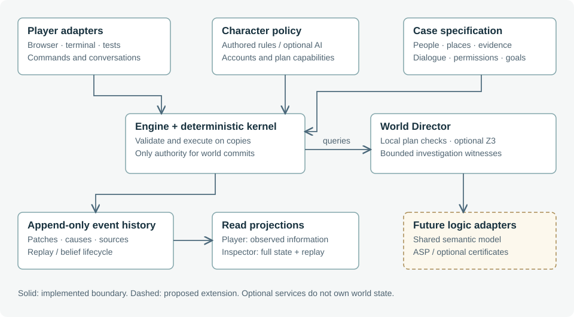
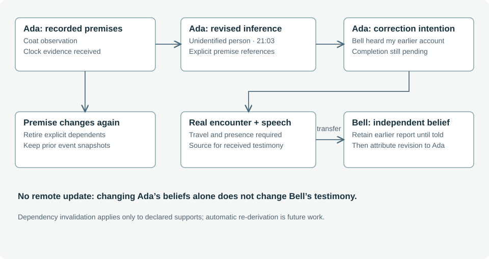
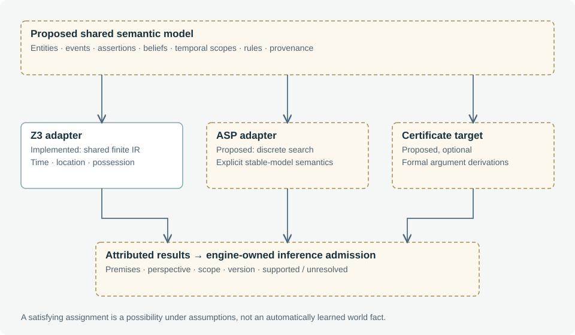
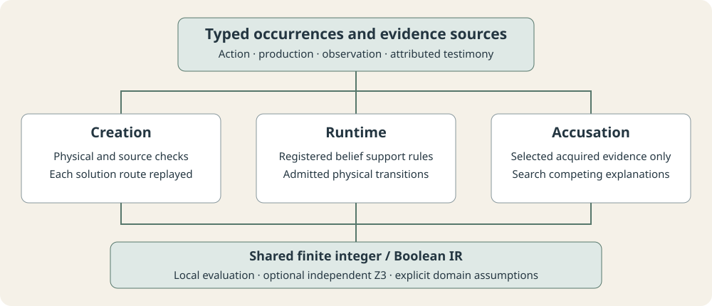
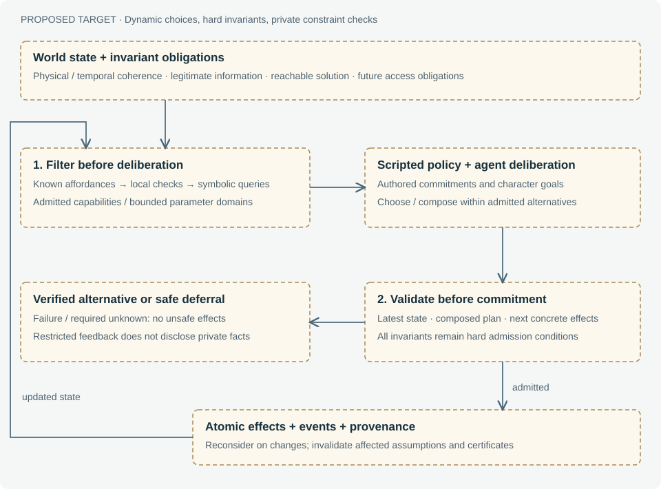
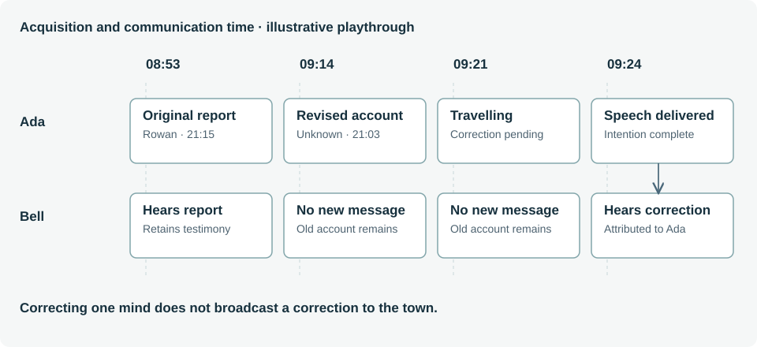
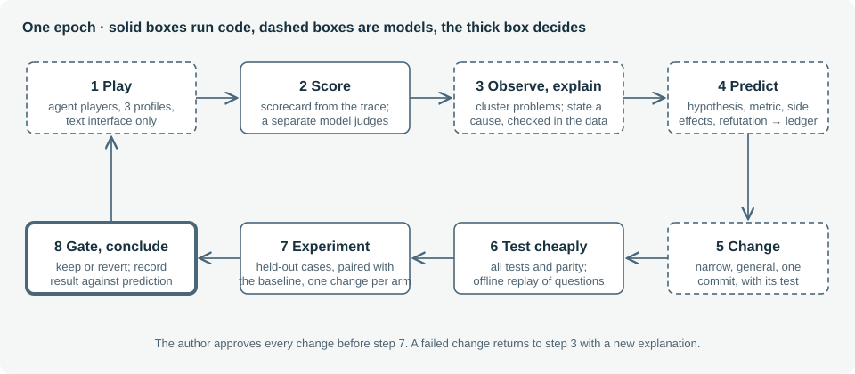

Living Mystery
A deterministic substrate for believable characters and investigable worlds
Living technical report · Edition 0.26 · 11 October 2026
Abstract
A mystery game asks its player to reconstruct a hidden history from incomplete and sometimes deceptive evidence. A simulated social world complicates that task: witnesses move, documents change hands, beliefs evolve, and a conversation can change what happens next. Natural-language agents can make these interactions expressive, but expression alone does not establish causal consistency, legitimate knowledge acquisition, or continued investigability. Living Mystery explores an architecture in which a deterministic simulation owns state transitions, characters propose bounded actions and dialogue, and a World Director checks selected physical plans and investigation routes before committing them.
The current prototype includes the original Last Bell and configured/generated Bellweather cases. It combines an append-only event history, perspective-limited beliefs and memories, authored decision policies, optional language-model character turns, a shared action and forensic vocabulary, ordinary autonomous lives, finite competing explanations, and an optional Z3 adapter. The inspector reconstructs past states and exposes the provenance of decisions and knowledge. This report describes the implemented contracts, distinguishes their guarantees from their limitations, and develops a research agenda for generating coherent and playable mysteries. The central hypothesis is that expressive characters and rigorous world rules can reinforce one another when their authority and information boundaries are explicit. This hypothesis has not yet been established by a player study or a real-model evaluation.
Report status
This is a design and implementation report, not a peer-reviewed paper or a claim of completed procedural generation. It documents the working-tree implementation at the date above. Test evidence is reported with its scope; planned evaluations are not presented as results. Worked examples reveal the solution and private character information in The Last Bell.
| Label | Meaning in this report |
|---|---|
| Implemented | A concrete path exists in the repository. This does not imply generality or empirical quality. |
| Experimental | Implemented, bounded functionality whose adequacy needs broader evaluation. |
| Proposed | An architectural target or experiment without a complete runtime implementation. |
Contributions of the current prototype
- An event-based simulation that separates recorded physical history from character beliefs, speech assertions and player hypotheses.
- A common admission boundary for authored and bounded AI-selected physical plans, with local checks and optional independent solver execution.
- A provenance-preserving belief lifecycle, including explicit dependencies, retirement and completed intentions.
- An investigation debugger that makes temporal order, information flow and differing perspectives inspectable.
- Bounded acquisition search and mandatory transition admission in three authored configurations, with executed prehistory and source-linked morning evidence.
- A composable narrative-module ("brick") system with a case-general validator: each case is a base scaffold plus composed modules, and only cases that pass physical, epistemic, reachability and evidence-driven distinguishability obligations (plus each module's local invariant) are admitted. A seeded sampler yields validated, playable generated cases over the fixed cast.
These are engineering contributions of this prototype. We make no priority claim relative to the wider literature. The research context identifies related approaches without implying that their methods or empirical results have been reproduced here.
How to read the report
Start with research questions and principles, then architecture. The next three chapters detail knowledge, character turns and symbolic validation. World Director explains the boundary between a feasible action and a viable investigation. Worked examples connect those mechanisms to actual play. The remaining chapters address player and inspector experience, evaluation, and procedural generation.
The reference chapter contains a glossary, source map, bibliography and maintenance protocol. A single-page edition collects every chapter for continuous reading and printing. Markdown sources and SVG diagrams are maintained alongside the implementation; generated HTML is a reproducible reading format rather than the editing source.
Edition 0.3 implementation
Three fixed same-cast configurations now vary culprit, means, motive and crime time. Their prehistories execute in the kernel; evidence and initial knowledge link to recorded events. A bounded acquisition search constructs and replays investigation witnesses. The new configurations enforce local transition admission even with AI and optional Z3 disabled, including relevant intermediate access/deadline checks. Generation explains the implemented pipeline and the bounded seeded sampler. The original case remains available with its existing richer authored behavior.
Edition 0.4 implementation
A case is now a base scaffold plus composed narrative modules (dist/modules/): reusable bricks — misdirection, an honest-mistake correction delivered to the constable in person, a benign secret that makes an innocent evasive, and a live culprit concealment — that contribute clues, sourced prehistory, NPC capabilities and dialogue, and each declares a local coherence invariant. A case-general validator (dist/casegen.mjs) admits a specification only when it passes physical execution, epistemic sourcing, bounded reachability and evidence-driven distinguishability (selected acquired records exclude alternative suspect/method/motive combinations in the finite domain) obligations, plus every composed module's invariant. A seeded sampler returns only validated cases, and generated cases resolve from their id, so they are playable and save/reload-safe through a menu "generate a case" action. The capability system gained fetch and inform plan shapes, so concealment (the culprit hides a document it knows about) and correction (the witness travels to Bell and delivers her revised account) run as validated live plans. This advances the staged plan into a bounded slice of G2; new casts, maps and richly generated prose remain future work.
Edition 0.6: persistent NPC lives
Ordinary responsibilities, fatigue, errands and social goals now coexist with mystery modules in configured cases. NPCs deliver invitations, accept appointments in person, reserve travel time and reconsider failed plans. Optional language-model deliberation selects bounded goal sequences through the same action and commitment checks. Scripted mode and deterministic replay remain complete paths. The character chapter describes implementation and limits.
Edition 0.6: shared forensic reasoning
Configured and generated cases now use typed crime/evidence occurrences, registered belief-support rules, finite competing-explanation grading and three investigative structures. The browser and Z3 share the constraint representation. The original case retains its authored rubric; the new checks certify only the declared finite domain. See symbolic validation and structural generation.
Edition 0.7: verified and hardened AI paths
The optional model paths were exercised against a live model and hardened. Life deliberation now runs detached after the player's action commits, so it never blocks the action or its reply, and it yields to any new player turn (an in-flight deliberation is aborted so it cannot stale the turn); its goal selection is parsed fence-tolerantly and passes the local investigation-admission check. A free-text question a character has no account for now produces a faithful in-character decline — the model may not answer or assert facts without a selected account — instead of a fallback. World Director deferrals in conversation now explain how to proceed. These are robustness and UX fixes; the underlying contracts and finite domains are unchanged.
Edition 0.8: durable autosave and conversation-focused people view
Autosave now uses IndexedDB as the primary store, with localStorage kept as a synchronous mirror and fallback. A long investigation with the full AI reasoning trace could exceed the browser's ~5MB localStorage quota and fail to save; IndexedDB's far larger quota removes that cap, and the save degrades gracefully (compact gameplay-only localStorage, then an error) only if both stores fail. The Export file remains the durable off-browser copy. In the notebook's people view, the person you are currently speaking with is pinned to the top and marked, so their profile and live trust/stress meters stay visible as the conversation changes them.
Edition 0.9: structural variety — the declarative forensic model and manner-of-death
The first step from *combinatorial* variety (the same puzzle with different fillers) toward *structural* variety (different kinds of investigation). The finite forensic model is now declarative: dimensions are data (integer domains with labels), evidence predicates are a compiler registry, and a single generic enumerator ranges over whatever dimensions a case declares — a behaviour-preserving refactor that leaves every prior case identical. On that substrate, manner-of-death adds the first new axis: some generated cases are staged to look like an accident, and the accusation is gated until a coroner's finding establishes that the death was murder. It is always ultimately a murder (staging is a disguise), manner is an investigative gate rather than an accusation field, and the coroner finding is load-bearing on every proof route. A separate design note (docs/manner-of-death.md) records the rationale, the declarative-model shape, and the safety rails.
Edition 0.11: the primitive-algebra pipeline, an affordance grammar, and an LLM composer
Generation now runs on a named, versioned primitive algebra (dist/primitives.mjs) with a declarative composition compiler (dist/composition.mjs): a composition is pure data that compiles to the same certified prehistory/claims/routes a hand-authored brick produces (two live bricks were re-expressed as compositions to prove adequacy). Three deliberately divergent case types exercise it — staged-suicide, two-person collusion (a shielding ally's false alibi, caught by the contradiction engine), and delayed-effect poisoning (toxicology fixes the administration window, not the death). The "means" axis became an affordance grammar (AFFORDANCES in primitives.mjs + an object catalog in dist/objects.mjs + a mechanism compiler in dist/mechanism.mjs): each affordance reduces to a validated kernel predicate, so new murder objects — an icicle that melts, a silk-scarf ligature, a rigged set-and-leave chandelier — are mostly data. A forced-insight obligation certifies that a declared twist is load-bearing (removing its clue drops the true accusation's support), and a manner×method coherence guardrail rejects logically contradictory stagings. A prep-time LLM composer (dist/llm-composer.mjs, surfaced as "Generate with AI") proposes specifications over the validated palette, compiles and validates them with the same oracle, repairs from structured feedback, caches per seed, and falls back to the deterministic sampler when the model cannot produce a valid case. Character dialogue was made markedly more natural: per-character pronoun/address/voice, a warmer generation temperature, an explicit "don't recite records" instruction, witnesses that confirm the objective records shown to them, and a relaxed number gate that permits natural time phrasing while still blocking invented figures. See Generation and the design note docs/primitive-algebra.md.
Edition 0.12: depth — gated discovery, inference chains, and a certified inversion
A first end-to-end deep case model, built as a parallel path that rides the existing engine (the flat path stays green). A case is now expressible as an artifact (dist/case-artifact.mjs): *neutral* observations that don't announce their meaning, each grounded and carrying the typed claim it licenses, with discovery gates (a clue's object stays locked until its prerequisites are acquired) and a declared inversion. New obligations certify depth: fair-play (every inference premise is earnable), discovery-depth (a load-bearing clue sits N gate-hops deep), and the inversion-anchor contract (the anchor is reachable, necessary, and overturns a coherent naive reading). A library of coherence-preserving operators (dist/operators.mjs) deepens an artifact, and a deterministic generator (dist/deep-generator.mjs) produces an always-certified deep case — a delayed poisoning whose decisive toxicology finding is hidden behind a washed-decanter → discarded-dregs chain, with the recorded time of death as a misdirecting alibi the toxicology overturns. The LLM composer picks who/why and falls back to the deterministic deep case. The chooser offers "🧩 Generate a deep case"; reachability was extended so the bounded search finds the gated path. See the design note docs/depth-operators.md.
Edition 0.13: breadth, deeper ladders, red-herring fog, and in-room disclosure
Edition 0.12's single deep shape becomes a family. The generator now selects among three deep shapes, each hiding a *different* forced anchor: delayed-poison (the toxicology time-of-death), buried-motive (a reconstructed confrontation memo), and hidden-means (a tool-mark trace that clears the obvious weapon). Each anchor is now buried behind a ~5-hop discovery ladder rather than two, so investigation becomes a point-and-click chain — examine one lead to reveal the next. Every deep case also carries red-herring fog: neutral observations with no bearing on the crime (a hidden love-letter, an unpaid wine bill, a stopped clock), some hidden behind one another, which are *never* forced and *never* a premise of a forced clue — so the solver's route ignores them while the player must sift them. The binding constraint is the bounded solver's 30-clue bitset; a deep case now uses ~23–24 of 30, and all sampled seeds certify at depth 5 across all three shapes.
The interface gains in-room disclosure: the inspect panel groups reachable objects into sections by the kind of evidence they yield, and *hides* gated objects until their prerequisites are found (removing the old inspect-and-reject on locked objects). A quiet hint signals that hidden leads remain. Finally the LLM can author a full deep artifact (composeArtifactCase): it proposes a whole discovery chain of neutral observations gating a forced anchor plus the inversion; a safe expander (expandArtifact) rejects malformed structure and never admits ungrounded claims; the engine certifies every obligation, repairs from structured feedback, and falls back to the deterministic deep case. A small operational fix lets the local LLM proxy self-heal a stale cached credential by rebuilding its client once on failure. See docs/depth-operators.md.
Edition 0.14: a general mystery kernel, recursive refinement, and playable generated cases
Case generation was redesigned from first principles as a setting-independent mystery kernel: four primitives (entity, event, attitude, rule) plus a question, a fixed set of sign kinds whose meaning is computed by code, and one recursive operator family — Conceal, Fragment, Mislead — under two laws (the refined chain delivers the same proposition, and every refinement is justified by an event caused by someone's attitude). Misdirection is defined as a defeated default. A refinement harness lets code choose where a case gets harder and check every step while a language model writes the story beat and a second model reviews its plausibility. The kernel is implemented in JavaScript (dist/mk/kernel.mjs) and agrees with the harness's Python checker on every generated case. Run in the Bellweather setting with the original cast, map and art, the generator produced five certified cases at solve depth 4–7 (14–24 clues, 27–35 history events, a certified twist, lies and red herrings), which play in the existing game through a bridge (dist/cases/kernel-case.mjs) including free-text character dialogue grounded in each character's memories and beliefs. See docs/mystery-kernel.md.
Edition 0.26: claims that are sound and complete
The language of clues was audited predicate by predicate and replaced. A claim is now an instance of one of eleven predicates over *fluents* (where someone is, who holds an object, a relation, a trait), each with a temporal mode (throughout, at some minute, at no minute); events change fluents through their effects, and a claim's truth is computed in the history (a claim the history does not decide is refused). Suspects are ruled out only by what the player knows: the clues they hold and trust, and *public signs* (what everyone in the village knows, held from the start). The direct procedure in both kernels agrees with a Z3 reference both ways on every case and on 5,600 random sets of evidence. All published cases were migrated; their certificates are unchanged except where the crime window, now public, overturns a stopped watch. Specification: docs/claims.md. See chapter 12.
Edition 0.25: a worked example
Chapter 12 follows one case, *Death Among the Orchids*, through its life: the records that represent it, how the generator's proposals were refused and accepted by the kernel, and how the director, the characters and the accusation were checked during a play-through, with the solver's actual results. See chapter 12.
Edition 0.24: a bug track, and a fourth epoch
A bug track checks every recorded game with invariant detectors and a correctness judge that sees the true records; six general bugs were found from the agents' games and fixed. A fourth epoch on fresh cases rejected one change and kept two as fixes. Turns that leave the player with nothing fell from 28% to 7%. See chapter 11.
Edition 0.23: playtesting itself
Agent players with profiles play cases through a text interface; the games are scored from the event log and judged by a separate model; changes are proposed as hypotheses with registered predictions and kept only if paired experiments on held-out cases support them. Three epochs have run: one change failed and was reverted, and the kept changes raised the share of hints that help from 57% to 87%. See chapter 11.
Edition 0.22: playing it as a player
Five cases were played end to end, one by the author, and every problem found was fixed as a general rule. Everyone starts where the history leaves them, and the detective starts with the constable, who is the setting's role rather than a named person. People know what the detective did only if they saw it or were told, worked out from the event log. Stress follows the history: how much of what bears on a person the detective holds, and how far the field has narrowed on a suspect still standing. Questions that reword another are found at publish and asked through it. Hints follow the signs the kernel finds critical to the solution. The play-time Z3 check counts held evidence only once it can be read, as the game's kernel does. See docs/living-village.md.
Edition 0.21: a living village
Witnesses say whom they saw last night, from the true history and only where that cannot shortcut the puzzle. The morning moves: a model plans the next half hour over the whole story, and three critics check each plan first (code for knowledge, place and time; a model for what is said; the certifying kernel for every concealment, so at least one solution always remains). Two cases were played to a correct accusation with culprits hiding evidence along the way. See docs/living-village.md.
Edition 0.20: what people can say
Every person in a case has an evening in the history; each says what they did last night and this morning from their own events (the culprit may give a cover story), and the questions keep night and morning apart. The fact-checker knows the time, lets characters restate their own stories and say when they do not know, and every account is checked to be reachable from the Talk menu. Cases are tested end to end: generation, certification, a solved play-through, and every character asked a standard set of questions with the real AI. See generation §10.17.
Edition 0.19: difficulty, a newcomer and more objects
Cases carry a computed difficulty (easy, medium or hard, from the certifier's measures) and can be generated to one; the village gains a twelfth person, Mrs Vera Lacey, a newcomer lodging at the Rook; and the clue library grows to 50 painted objects that the generator knows, with each clue's picture chosen at publish. See docs/difficulty.md and docs/visual-world.md.
Edition 0.18: the history is the only source of facts
Characters can only say what the generated history lets them know: every account is backed by an event they took part in or saw, or by something the case records they knew, and both kernels certify it. The examination of the body is part of the history, so the doctor remembers it. Publishing no longer adds facts after the story is written, and code names roles, not people. See generation §10.17.
Edition 0.17: a visible village
The game now shows the world instead of listing it: an illustrated village map with who is where and what is left to do, the scene of the current place, a full-height two-sided conversation, a Talk panel (people here, questions, free text), an inventory with clue art and drag-to-show, a Clue Board with every villager's profile and the full history, and an opening with the cast and a tour. Everything is drawn from engine state and never reveals hidden facts. Art for new places, people, the detective and a 30-object clue library was generated in the game's style. The design is in docs/visual-world.md.
Edition 0.16: fair, varied cases and characters that talk like people
Certification now requires motive, means and opportunity: a case publishes only if the player can reach evidence of the culprit's motive and means as well as rule out every other suspect. The accusation asks who, how and why; Bell names the missing pillar. A Z3 case oracle re-derives feasibility and uniqueness independently of both kernels, and a case is published only when all three agree; for an unproven accusation it supplies a concrete alternative story.
A premise deck chosen by code (victim, culprit, suspects, method, motive, scene and shape, rotated against recent cases) replaces the fixed briefs, so the model writes the story but cannot fall back on its favourite one. The village grew to ten places and eleven people with character sheets and new art. Publishing adds everyday knowledge, per-case moods, loose-end explanations and concessions, then reviews every written line against the true history. Characters use their everyday facts, hold back openly instead of playing dumb, and are guarded against wrong names and invented times. One finished case is kept in reserve so a new case can be started at once.
Edition 0.15: generation in the game, and a playable generated case
The case chooser now has a single generator. It starts a job on a local generator server, which runs the refinement harness in the Bellweather setting and streams progress: the first draft, then every layer with its story beat, the records it added, rejected candidates and the plausibility verdicts. The player sees a high-level progress view; a collapsed spoiler section shows the cast with their secrets, the hidden history and each layer, for testing. Finished cases are published for play.
Playing generated cases exposed gaps that are now closed: every case includes the doctor's examination (cause of death and the time window, needed to judge alibis; certification unchanged), every character has an evening account, the physical traits clues test are visible, showing evidence uses spoken lines and per-character reactions written at generation time (with kind- and relation-aware templates as fallback), honest mistakes are conceded differently from lies, free-text questions can draw on every account a character can give, and a guarded third attempt keeps untold memories private in character. People keep to their places, a progressive hints tab replaces hypotheses, and every layer writes debug logs to logs/ (see the reference chapter).
1. Research questions and design principles
Status: implemented principles; proposed empirical evaluation.
1.1 The problem is inference in a changing world
A conventional puzzle can hold its evidence still while the player reasons. A living mystery must permit change without making inference meaningless. A witness may correct an honest mistake; a frightened suspect may conceal a document; a player may miss an encounter that really occurred. These developments should have causes the player can eventually understand. They should not be arbitrary repairs to a story produced after the fact.
We distinguish four desirable properties. Physical coherence concerns locations, possession, durations and event order. Epistemic coherence concerns how an actor obtained and revised information. Investigative viability concerns whether an executable route to a supported conclusion remains. The refined target makes physical/temporal coherence, epistemic legitimacy and continued solvability hard admission invariants, while agent goals and dramatic pacing rank choices within the admissible space. Experiential quality concerns whether the investigation is understandable, engaging and fair. Satisfying any one does not establish the others. In particular, a satisfiable temporal model may describe a dull or practically undiscoverable mystery.
1.2 Research questions
| Question | Current instrument | Evidence still needed |
|---|---|---|
| RQ1: Can expressive dialogue remain within explicit information and action boundaries? | Immutable turn tickets, account capabilities, critic, atomic application | Real-model disclosure and semantic-error evaluation |
| RQ2: Can beliefs change without rewriting history or spreading knowledge remotely? | Provenance, dependencies, local observations, real conversations | Wider correction networks and conflicting-source scenarios |
| RQ3: Can character agency coexist with a reachable investigation? | Feasible plans, bounded acquisition search and configured admission | Contingent search and broader player-choice robustness |
| RQ4: Can a debugger explain failures with enough precision to guide authoring? | Timeline, character perspective, causal parents, solver audits | Diagnostic task studies and authoring-time measurements |
| RQ5: Can the same contracts validate generated cases? | Case interface, executed configured prehistory and action/query fragments | A generator and general distinguishability checks |
The Last Bell is a reference case for developing these instruments. It is not a representative sample of generated mysteries. Success in one carefully authored world should lead to harder counterexamples, not an immediate claim of generality.
1.3 Authority and uncertainty
The engine owns committed world changes. A character's statement is an event; its contents may be false. A model proposes a reply or plan, but cannot submit an unrestricted world patch. The inspector may display private facts, but a character context must be constructed from that character's perspective. A solver may find a possible model, but that model does not automatically become an NPC's knowledge.
These distinctions deliberately preserve useful uncertainty. An unidentified coat wearer is not an identified suspect. A plan to meet someone is not evidence that the meeting occurred. A copied rumor is not an independent corroborating source. A failed search for a solution is not a proof of impossibility unless the search and its completeness boundary justify that conclusion.
1.4 Determinism as an experimental control
With AI disabled, authored dialogue and NPC policy run without generative calls. The optional symbolic service is independent of AI: a scripted turn can still request Z3 verification. Given the same recorded events, replay reconstructs the same state without invoking either service. Rerunning commands with fresh AI responses is a different experiment and need not reproduce the same event sequence.
This distinction permits controlled comparisons. A proposed AI action can be replayed as a structured action; a failing trace can be restored without reproducing stochastic wording; and a solver result can be inspected against the exact query that produced it. Determinism supports diagnosis, but it is not a substitute for testing that the model of the world is correct.
1.5 Relation to prior work
Generative Agents describes agents whose recorded experiences support retrieval, reflection and planning. Living Mystery shares the interest in persistent experience, but presently uses bounded contexts and authored disclosure capabilities rather than a general reflection architecture. Park et al., 2023.
Narrative planning research explicitly connects causal plot structure with understandable character intentions. That distinction motivates recording why a character chose an action in addition to checking whether the action can occur; the current scored policies are not an implementation of IPOCL. Riedl and Young, 2010.
Our research program is therefore an integration and evaluation problem: how much expressive freedom can a useful shared model support, and which failures require richer representation rather than another natural-language instruction?
1.6 Hybrid autonomy as the governing objective
Scripted structure defines hidden history, evidence origins and required investigative opportunities. Character policies choose how to pursue goals within those constraints. The target is solver-assisted filtering before deliberation and concrete validation immediately before commitment, with shared enforcement for scripted agents, AI agents, players and time-dependent effects. See the refined Director contract for its formal scope, assumptions and current implementation gap.
2. System architecture and authority boundaries
Status: implemented architecture with experimental AI and Director paths.


2.1 Three implementation layers
The kernel, case and engine façade divide mechanics from content. dist/kernel.mjs supplies event commits, replay, travel, minute-by-minute time advancement, perception and persistence checks. createKernel(model) binds those mechanisms to case tables. The kernel's decision policy is injected by the engine rather than imported from a particular mystery.
dist/cases/last-bell.mjs supplies the world factory, initial beliefs, routines, scored decision candidates, authored dialogue, evidence reactions and accusation rubric. Its data tables live in dist/case.mjs; structured claim definitions and reasoning-board metadata are separate modules. dist/engine-runtime.mjs assembles a case-bound kernel and command API. dist/engine.mjs selects the runtime by session case ID and applies admission at public dispatch boundaries. dist/cases/bellweather.mjs builds authored and generated variants from explicit specifications; dist/prehistory.mjs executes their evening history. Each case is further composed from narrative modules (dist/modules/): reusable bricks that add clues, sourced prehistory, capabilities and dialogue and declare a local invariant, and dist/casegen.mjs validates a composed specification (and can sample new ones) before it is playable — see Composable narrative modules and validated sampling.
This separation is a useful generation target, not proof of complete case independence. The variants share Last Bell entity IDs and graph, with a finite configured forensic domain; legacy exports and some presentation assumptions still refer to that cast. A procedural case must eventually replace those assumptions with declared capabilities or explicit case adapters. Merely swapping a data table would not yet produce a complete new game.
2.2 State as a fold of events
Let W₀ be the case's initial world and Δᵢ the patches on event eᵢ. State at an event prefix is defined operationally by:
Wᵢ₊₁ = apply(Wᵢ, Δᵢ)
Wₙ = fold(apply, W₀, [Δ₀, …, Δₙ₋₁])An event includes an ID, index, simulation minute, actor, location, kind, causal parent IDs, structured data, before/after patches and optional player-visible text. Parents express recorded causal links; chronological adjacency alone is not a causal explanation. Events at the same minute retain a total order through their indices. The implementation does not claim that a parent list is a complete causal model of every effect.
A player command establishes a root event. Dialogue, movement, observations and NPC decisions create descendants, followed by a completion checkpoint. worldAt reconstructs a prefix from the base world. It does not run the scheduler, regenerate dialogue, or change the live session. Import validates the event/patch history against the saved world. Selected legacy repairs, such as a completed correction intention, append repair events rather than silently modifying earlier events.
A generated (kernel) case travels inside its saves, and its runtime is bound to the exact records a save carries, identified canonically (keys sorted, undefined members dropped, so a record and its JSON round trip share one identity). dist/engine.mjs validates a save by full replay before it adopts or caches the embedded case, so a rejected save leaves no definition and no cache entry behind. Cases bound only by saves are cached least-recently-used, sixteen at a time; a live session keeps its own runtime regardless.
2.3 Nested transactional boundaries
The AI character pipeline prepares a ticket containing the serialized starting session and a restricted context. An accepted proposal runs on a candidate copy; diagnostics must pass before that candidate replaces the live state. If the session changed while the model was working, the ticket is stale and cannot authorize the turn.
When World Director is enabled, the UI stages the whole candidate turn on a copy. The Director inspects newly recorded, locally admitted plans, checks their queries, and optionally searches for an investigation witness. Only a successful result commits the candidate's world and events. Cancellation leaves candidate effects unapplied. A rejected or unresolved Director check may append a private decision audit to the original session while leaving the attempted action's time and effects uncommitted.
Configured life deliberation uses its own perspective-limited, stale-checked ticket. The UI stages optional life choices with the player action or accepted conversation, so cancelling the pending turn leaves both effects unapplied. This outer copy exists even when optional Z3 is off. Configured public dispatch additionally requires local investigation admission, while the raw runtime is reserved for internal replay witnesses.
Consequently, a displayed “checking” indicator belongs to pending validation, not post hoc approval of a response already made authoritative. The UI now shows it only when a real symbolic check begins. Character turns details generation and criticism; Director details the outer boundary.
2.4 Runtime and deployment boundary
The browser loads ES modules and retains the local investigation. A Python proxy serves optional model requests; a separate Python service exposes Z3 on loopback port 8788. The solver service has no need to call an LLM. Every local server binds to 127.0.0.1 and answers only its own Host (127.0.0.1:<port> or localhost:<port>), which defeats DNS rebinding; the proxy, solver and generator also require an exact origin from one shared parser of LM_ALLOWED_ORIGINS (server/local_origins.py) and a custom request header, and the game server never serves dotfiles. Socket reads and writes time out after 30 s, so a client that stalls mid-request cannot hold a thread, while a model call in progress is bounded only by its backend's own timeout. The proxy's optional request ledger (LM_AUDIT_FILE) keeps metadata and hashes, never prompt, reply or error text, and a failure to write it never affects the reply. These checks restrict browser pages; they are not a production authentication system against other programs on the machine.
The public player projection and omniscient inspector are presentation boundaries within a local single-player application. Source files and exported saves contain secrets. Preventing a technically curious player from reading the solution is outside the current security model. A future hosted multiplayer or adversarial setting would need a different server-authority and access-control design.
2.5 Scaling implications
Full reconstruction from W₀ is simple and auditable, but repeatedly scanning a growing event history will not scale indefinitely. Proposed improvements include periodic snapshots, indexed event lookup and causality queries, and bounded perspective retrieval. Each optimization must preserve prefix semantics: an index must not accidentally return a later observation while inspecting an earlier world. This is a correctness requirement before it is a performance feature.
2.6 Proposed admission boundary
The refined target adds an explicit pre-deliberation filtering boundary before scripted or AI choice, followed by a latest-state execution boundary. Certificates or constrained capabilities carry semantic dependencies, assumptions, horizon and rule/adapter versions; they are invalidated by relevant state or time changes. All admitted transitions must preserve hard invariants, using direct checks, applicable symbolic queries or a sound preservation argument. This extends the current selected-plan transaction rather than claiming it already covers the whole simulation. See Figure 8.
2.7 Configuration-specific admission
New configurations stage every public player or character action on a copy and require a replayed acquisition witness before committing it. Relevant intermediate access/possession and declared expiry changes receive separate prefix checks. A terminal flag cannot bypass an earlier failed check. This local boundary is active independently of the optional solver; Z3 can additionally verify represented short plans. Original saves retain the original optional Director boundary.
investigation.mjs constructs candidate acquisition routes; admission.mjs governs their use in transition and capability checks. Engine-internal witness execution uses the raw case runtime to avoid recursive admission. This is trusted developer machinery, not a security interface. See the Director chapter for model bounds and unresolved semantics.
2.8 One model, distinct guarantees
| Boundary | Implemented decision | What it does not establish |
|---|---|---|
| Case sampling | Typed sources, physical history, finite discrimination and replay of each route | Arbitrary new worlds or universal future solvability |
| Knowledge update | Registered support rule for configured observations, testimony and inferences | Truth of all speech or automatic interpretation of prose |
| Agent plan | Local preconditions, commitments and supported temporal constraints; optional Z3 | Complete prediction of every other agent's future |
| Player accusation | Alternative suspect/method/motive combinations consistent with selected acquired records | Exclusion of unmodeled accomplices, weapons or forged records |
The browser evaluator and Z3 consume the shared finite IR. Solver output is a validation result, not permission to patch history or silently teach characters hidden facts. The proposed multi-logic inference-feedback architecture remains a separate extension.
3. World state, assertions and knowledge
Status: provenance, dependency invalidation and registered configured-case support rules are implemented; general inference discovery remains proposed.
3.1 Separate representational roles
| Representation | Authority | Example |
|---|---|---|
| World state | Current engine state | The folio's holder is Silas. |
| Event | Recorded occurrence and changes | Ada spoke to Bell at a particular minute. |
| Assertion | Attributed contents of a statement | Ada said she identified Rowan. |
| Belief | A character's retained proposition | Bell provisionally accepts Ada's account. |
| Memory | Retained reference to an experienced event | Ada remembers showing or telling someone something. |
| Player hypothesis | Player-authored interpretation | This clue supports a suspect's opportunity. |
| Intention or plan | Proposed future behavior | Ada intends to correct Bell in person. |
These roles may refer to the same subject without having the same truth conditions. Committing a speech event establishes that the speech happened; it does not establish that its assertion is true. A belief's inspector-only truth annotation is a case-author label, not a theorem derived by Z3 and not information supplied to the character model.
3.2 Time of occurrence and time of acquisition
Case-night assertions can describe 21:03 while being acquired by the detective the following morning. Structured claims carry selected predicates and time intervals; events carry acquisition or execution time. Mixing these axes would make later testimony appear to be a later crime-night occurrence. The inspector and reasoning tools must preserve the distinction.
The claim projection compares a bounded set of assertions. Overlapping intervals that place the same person at different locations can conflict; disjoint death windows can conflict; a planned appointment does not establish presence. These comparisons do not constitute full temporal theorem proving. They also do not estimate whether two agreeing witnesses are independent.
3.3 Perception is an event, not access to the world object
A stationary character receives movement observations for arrivals or departures at its location. The observation contains the subject, phase and observed location. It does not grant the subject's private purpose, destination or entire route. Transit is not a common room in which all travelling characters can overhear each other.
Object transfers similarly create local observation events. Case callbacks can attach narrative consequences: a witness who sees Silas take the folio can later report that action. A survey observes visible surroundings at execution time, not at the time an AI proposed travelling there. It does not automatically read all evidence or award the detective a notebook clue.
3.4 Belief revision and dependency invalidation
dist/knowledge.mjs records belief text, confidence, source type, source event, acquisition time and optional speaker metadata. An inferred belief can additionally declare premise keys and the corresponding source IDs. This is explicit provenance, not a natural-language dependency extractor.


Replacing an active belief records the previous belief in the new event. Retiring one records its reason and removes it only from the active list. A changed premise recursively retires dependent inferences for reconsideration. Cyclic support is rejected. Repeating an identical supported update is idempotent; hearing the same statement again as a genuinely new event remains a distinct experience.
revise(actor, premise):
identify active inferences that explicitly depend on premise
retire those inferences and their transitive dependents
append the replacement belief, retaining its source and predecessor
leave historical prefixes and other actors' independent beliefs intactRetirement is not automatic re-derivation. A case rule may produce a new conclusion from revised premises; the current runtime does not generally recompute every retired inference or ask a solver to resolve it. Nor do all existing authored beliefs declare dependencies. Coverage is therefore an explicit authoring responsibility.
3.5 Testimony and completed intentions
Generic communication creates attributed testimony in the recipient, with unknown case truth rather than copying the speaker's certainty into objective truth. Updating the speaker later does not remotely update the recipient. A queued message is blocked if its source belief changes before delivery, requiring a fresh plan.
A completed intention has a similar lifecycle. Ada's pending correction is retired after the actual speech to Bell; a completed belief cites that speech. Generic queued plans retain a cursor, cause and status and record completion or blockage. A promise is not marked complete simply because the words were accepted by a critic.
Confidence values are currently authored or bounded policy values, not calibrated Bayesian probabilities. Showing “99%” should not be read as an empirical accuracy guarantee. Future work should examine whether qualitative confidence displays communicate the model more faithfully.
3.6 Typed support and live admission
New configured prehistories declare exact supported accounts and typed premises. Source validation checks what an occurrence establishes and whether the character personally observed it or received the testimony. A valid but unrelated event ID fails. Evidence claims have separate predicate-specific production checks.
Configured live belief updates now pass registered support rules before state changes. The rules cover presented evidence, attributed reports, transfers, local surveys and current case inferences. Unknown support rules fail closed; the registry is the extension point for new knowledge operations. Player testimony remains explicitly uncertain. In particular, Ada's clock correction adjusts timing without claiming to establish identity or whereabouts. Original-case knowledge policy remains separate, and semantic review of LLM wording remains the dialogue critic's responsibility.
4. Character policy, dialogue and physical plans
Status: deterministic play implemented; optional AI turns and capability plans experimental.
4.1 Two policies, one authoritative world
Scripted mode selects authored responses through case rules and supported topics. Autonomous decisions compare scored candidates such as maintaining a routine, protecting a relationship, correcting testimony or concealing evidence. Beliefs, flags, trust and location gate those candidates. This is a combination of stateful rules and scored policies, not a single explicit dialogue finite-state-machine implementation.
AI mode adds interpretation and expressive choice. A character selects an available account, communicative intent, natural wording, bounded trust/belief stance, engagement choice and optional physical-plan capability. The engine still owns all consequences. There are no autonomous background model calls on every simulation tick; queued plans execute deterministically after selection.
4.2 Perspective-limited preparation
A ticket supplies the character's own beliefs without truth labels, personality, values, goals, relationships, mood, recent memories and direct conversation history. Current limits include 18 retained memories and 12 recent direct speech entries in the prompt; the underlying character memory list retains up to 80 references. These are bounded windows, not semantic retrieval or unrestricted long-term reasoning.
Available accounts are generated by previewing supported case actions on isolated copies. Each account has an ID, authored statement, claim keys, source events, deception label and selected consequences. An explicit dialogue button offers its corresponding account; free text offers a broader supported topic set. Private beliefs can motivate a response but are not automatically licensed disclosures.

4.3 Validation and natural language
Structural validation checks the proposal shape, choices, account availability, claim/source equality, text bounds and numeric anchors. The separate-context critic checks semantic fidelity, relevance, continuity, unsupported disclosures, invented actions and consistency of belief or engagement choices. A permitted deceptive account remains permitted deception. The critic is not asked to force every character to tell the truth.
A passing critic verdict must parse strictly and have no violations: the critic is instructed to emit a single JSON object with no surrounding prose or code fence, so a verdict followed by explanatory commentary is treated as ambiguous and refused rather than parsed. Up to three generation attempts permit two repairs using the validation or fact-checker feedback. When the fact-checker has rejected an earlier reply, the third attempt is guarded: the character keeps untold memories private and deflects in character, unless the question requires an account of last night. Generation and critic use the same Bedrock model by default (LM_CHARACTER_MODEL; LM_ROUTES can route them apart), so their errors may be correlated. The request orchestration and response matching prevent several classes of accidental misuse; they do not prove that a faithful natural-language paraphrase was produced.
The AI budget is at most three generation and three critic requests within one client deadline (the turn timeout the proxy advertises: 45 seconds by default, 240 seconds when the character or checker runs on a local model). When every attempt is rejected, a menu question gives its published account and a free question falls back as described in 4.8; rejected wording is never committed. The generation prompt also directs a character to decline cleanly — a brief in-character "I could not say," with no account selected — for any question outside its perspective and knowledge, so an out-of-scope question yields a graceful passing non-answer instead of speculation the critic must reject; this is the general mechanism, not per-character scripted refusals. Cancellation applies no response. These controls bound orchestration; empirical quality, provider latency and monetary cost still require measurement.
Edition 0.11 improved naturalness within these bounds. Each cast member now carries a pronoun, a proper address (Mr Pike, Miss Vale, Dr Marsh, Constable Bell, Mrs Finch) and a voice (register), and the perspective ships a roster of everyone's name/address/pronoun; the prompt instructs the model to speak in that voice, briefly, and never to invent a title or gender (fixing "Miss Rowan" for a man and an over-formal constable). Two mechanisms had been quietly forcing the stiff authored fallback: the deterministic number gate required the reply to contain the exact digit-figures of the account, which rejected a faithful period rephrase like "21:30 → half past nine" — it now blocks only *invented* figures, leaving semantic time fidelity to the critic; and the present handler previously gave every non-witness the generic "I can only speak to what I witnessed", so a neutral examiner would not confirm what a lab report plainly states — a non-culprit shown an objective record (observation, document or physical trace) now confirms its content, while the culprit still deflects what implicates them. The character generation runs at a warmer temperature and the prompt forbids reciting a record word-for-word. A short live check found the critic itself is not the bottleneck: most turns pass on the first attempt with natural, in-voice replies; the remaining fallbacks were the number gate and the missing record-confirmation account, both addressed here.
4.4 Bounded physical-plan capabilities
Proposal version 2 adds plan, a capability ID or null. The trusted catalog currently offers surveys of public locations, transfers of held objects to local recipients, sharing selected witnessed location observations, and case-granted concealment. Silas's concealment capability requires his relevant knowledge of the detective's interest in the accounts. Narrative modules contribute case capabilities through the same catalog: a fetch-shaped concealment lets a culprit retrieve a document whose location it legitimately knows (gated on its own belief, not a leaked fact) and hide it, and an inform-shaped plan lets a witness travel to a recipient and communicate a belief it holds — used by the honest-mistake correction, which now delivers to Bell in person rather than only revising a local belief. Models cannot invent an object identifier, container, action verb or arbitrary patch.
{
"id": "survey:inn",
"actor": "bell",
"label": "Look around The Rook & Lantern",
"sources": [],
"steps": [
{"kind": "move", "to": "inn"},
{"kind": "observe", "location": "inn"}
]
}This example assumes Bell starts elsewhere. Capability generation adapts the steps to his actual starting state. Plan admission checks the current capability again before queueing it. It is bounded multi-step selection, not unrestricted plan synthesis.
4.5 Engagement and execution
Conversation engagement pauses the addressed character's autonomous activity. Other characters continue when game time advances. After conversation release, a queued plan executes against the shared contracts: travel begins, the cursor advances, and remaining steps resume at arrival or a later decision opportunity. Transfer, communication and observation are currently instantaneous actions at a simulation minute; travel uses graph-derived duration.

Every step is rechecked. An absent recipient, changed possession, inaccessible container or revised message source can block the plan. Successful transfers create local perceptions and case-specific consequences. Save/load preserves the queue, so continuation does not need a new model call. A future planner should be allowed to revise a blocked intention, but that revision must itself pass admission and preserve the record of the failed attempt.
4.6 Proposed hybrid deliberation
The next step broadens event-triggered deliberation while retaining authored candidates and commitments. The Director constructs a dynamically admissible choice set before the character reasons, using inexpensive local checks and symbolic filtering where constraints interact. An agent ranks those choices for its own goals, then submits a concrete proposal for composition and execution-time checks. The menu is a sound bounded subset, not necessarily every possible plan. This broader filtering stage is proposed; today's catalog does not establish continued solvability for every offered choice. The two-stage admission design also addresses hidden-information leakage through capabilities and rejection feedback.
4.7 Autonomous daily lives

Configured and generated cases now give each NPC public responsibilities and personal interests independent of the culprit assignment. Life state records energy, goals, task completions, active timed work, retry state and model cooldown. Work, errands and rest consume simulated time. Current work pauses for player conversation; other characters continue. Arrival, knowledge changes, completion and periodic checkpoints provide reconsideration opportunities. Mystery modules take priority when choosing a new plan, while an active plan normally runs until completion or failure.
Invitations are delivered by actual co-located speech. The recipient can accept or decline; acceptance also happens in person and records a shared meeting window. The requester waits for a bounded response interval. Future partner locations come from local perception, retained sightings or public-workplace expectations, so a trip can fail. Both participants must attend before fulfillment. Expiry and capped retry delays preserve unsuccessful encounters instead of rewriting them into successes.
Policy ranks currently permissible choices by responsibility, elapsed time, fatigue and social obligations. Accepted appointments constrain plans before utility selection. The shared action IR now includes a timed activity with presence, duration, deadline and frame constraints. The executor checks that the task is licensed for this NPC. A composed sequence must still fit accepted commitments; individually safe choices are not assumed safe together.
Optional model deliberation receives one NPC's goals, beliefs, memories and known commitments and chooses one to three current goal IDs. Social choices stand alone until their outcomes are known. Only the trusted engine expands IDs into actions; no generated prose or patches become world facts. Each player turn can add one five-second request, with a twenty-simulated-minute cooldown per actor and oldest-opportunity rotation. Malformed or unavailable responses fall back to scripted selection. Stale responses and cancellation cannot commit the pending player turn.
These are bounded ordinary lives, not a complete production economy or general cognition. Errands have timed completion records rather than inventories and money. The original case retains its legacy behavior. Tests establish orchestration and finite-domain behavior; real-model decision quality, richer relationship consequences and contingent investigative robustness require further evaluation.
4.8 Free-text questions, hints and the notebook in generated cases
Status: implemented for generated (kernel) cases.
Which account a question needs. A plain "Where were you last night?" must be answered with an account of last night, a lie or the truth. Code recognises the question with the same plain-whereabouts rule the menu uses (isPlainNightQuestion in dist/cases/questions.mjs), lists the night accounts as player.requiredAccounts, and validation rejects any other choice. All other routing is advisory (player.relevantAccounts): the account the person has just given, when the question follows it up at once ("And when was that?"), and otherwise the accounts sharing the most specific words with the question. The model is told to prefer them; validation does not enforce them.
What an account may add. Each account carries claimDetails: exactly the time window and place of its own typed claim. Certification already holds the account to that claim, truth or lie, so saying it adds nothing the certificate does not cover. An account without a timed claim carries no details, so an evening summary is spoken in its own words only. Nothing is taken from the history at play time.
Replies with no account. Code screens them first: no clock time, number or place the detective has not already mentioned. The name guard checks the people named in every reply. Clarifying questions, challenges and reactions keep their own words, and the fact-checker judges everything else. The fact-checker sees the selected account and the character's true accounts (ownAccounts), so it can catch a contradiction of what the character can truthfully say, and it rejects a reply that leaves unanswered a part of the question the selected account or its claimDetails covers.
When every attempt is rejected. A menu question gives its published account. A plain night question gives the published night account the model chose, if that attempt passed every code check. Any other free question declines in the person's published, fact-free words. Rejected wording is never committed.
Questions in play. Menus, hints and done markers share one question identity: a published alias (same_as, see 10.17) resolved along the speaker's own accounts to a question that delivers it, together with the plain-whereabouts rule, which play applies to cases published earlier as well. An alias that would not deliver its account is ignored and the account keeps its own button. Menus therefore never show two questions asking the same thing, and asking an equivalent question counts as the same action.
Hints that name a question. The second level of a testimony hint names the action that actually leads to the account. The bridge finds it by trying it on a copy of the game with the player beside the speaker: one listed question, two in a row, or the same question repeated, in which case the hint says to ask it "more than once: they tell it a piece at a time"; failing that, something the player holds that draws the account when shown. When nothing leads there from the current state, the hint says to talk to the person again in their own words. It never quotes a question the player has already finished.
What the notebook keeps. For generated cases the notebook records the published account, which is what certification holds the account to; the character's spoken words stay in the conversation. Spoken testimony is remembered by the speaker only. Bystanders remember the physical discoveries they witness, so they cannot later deny them.
5. Shared symbolic representation and solver adapters
Status: plan, crime-history and finite explanation IRs share an implemented Z3 adapter. General multi-logic inference remains proposed.
5.1 Why introduce a solver?
Many immediate conditions are simplest as ordinary code: whether a recipient is present, an object exists, or a player has discovered a clue. A solver becomes useful when conditions interact across several events: travel time, ordered transfers, mutually incompatible locations, possession at successive steps and bounded completion. The intended benefit is an inspectable set of explicit constraints, not replacing every conditional with a solver call.
The current Z3 integration checks concrete candidate plans. The local compiler also produces a concrete witness and evaluates its own constraints. Z3 independently solves the translated formula, but both paths depend on the same compiler's interpretation. Agreement is useful validation of the encoding and adapter; it is not independent evidence that omitted physical rules were modeled correctly. Z3 project paper.
5.2 The implemented fragment
dist/actions.mjs defines a closed vocabulary. dist/symbolic.mjs translates steps into integer location/holder codes, time variables and Boolean conditions. The expression language includes equality, ordering, addition, conjunction, disjunction and negation. A query carries a version, kind, perspective, variable domains, named constraints, source IDs, assumptions and horizon.
| Action | Required condition | Physical effect |
|---|---|---|
| activity | Presence, licensed task, duration 1–60 minutes and any deadline | Timed work/rest/errand completion |
| move | Reachable destination; declared duration matches route | New location after travel |
| observe | Presence at location; a specified object is visible | No holder/location change; executor records experience |
| communicate | Source belief exists; immediate recipient is present | No physical change; executor records speech/testimony |
| take | Actor and object are at the source | Holder becomes actor |
| give | Actor possesses object; recipient is present when executed | Holder becomes recipient |
| conceal / store | Actor possesses object at a declared container's location | Holder becomes container |
For a movement step from u to v, the intended time relation is tᵢ₊₁ = tᵢ + distance(u,v). For taking object o, the preconditions include location(actor,i) = u and holder(o,i) = u, with effect holder(o,i+1) = actor. Unchanged entities receive frame constraints. The plan's final time must lie within its horizon.
Plans contain one to eight steps with a default 120-minute horizon. The Python adapter bounds queries to 128 variables and 256 constraints and bounds expression depth and node count. Z3 receives a 1,500 ms timeout and resource limit of 200,000. Client turn verification permits at most 96 queries in sequential batches of at most 12, sharing a 10-second deadline. These bounds are implementation limits, not measured optimal operating points.
5.3 Conditional meetings and unsupported semantics
Immediate checks use live participant state instead of trusting a proposed recipientPresent value. A communication or gift after earlier steps can be admitted with an explicit assumption that the recipient will be present later. The current compiler does not predict that person's complete future schedule as part of the query. Execution rechecks the meeting; conditional satisfiability does not guarantee delivery.
Unsupported verbs, fields or container references are rejected or deferred rather than silently interpreted. The current fragment does not represent general doors, line of sight, capacity, force, combat, simultaneous resource contention or arbitrary social obligations. Adding a verb requires compiler, executor and counterexample tests, not just a new model prompt.
5.4 Result semantics
| Result | Justified interpretation | Unjustified interpretation |
|---|---|---|
| sat | At least one assignment satisfies the encoded constraints | This happened, is true, or will inevitably happen |
| unsat | The encoded constraints are jointly inconsistent | The entire story is impossible in every richer model |
| unknown / unavailable | The requested check did not establish an answer | Permission to apply the candidate anyway |
| route_found | An engine-replayed candidate reached the authored goal | All player choices or future policies remain safe |
Results include solver/adapter versions and a query digest. The client matches returned queries to the submitted queries and checks returned witnesses against variable bounds and all constraints. Unsatisfiable cores expose named conflicting constraints with source information; a core is not necessarily the unique or smallest explanation.
5.5 A future common semantic layer
The intended shared representation is broader than today's action-query IR. It should include typed entities, physical events, attributed assertions, epistemic contexts, temporal scopes, rules and query obligations. Adapters declare which fragments they support. Each inferred result should carry its premises, perspective, time scope and derivation status before engine-owned knowledge admission.


Z3 is the starting point for bounded temporal and physical constraints. ASP is a possible later target for discrete action or case generation where stable-model and default semantics are useful; clingo provides an open-source ASP system. Lean is a possible optional target for independently checkable argument certificates. Neither adapter exists in this prototype, and neither should be added solely to maximize the number of supported logics. Potassco clingo.
Translations must preserve declared semantics rather than treating different logics as interchangeable syntax. In particular, an absence of knowledge is not automatically evidence of falsity. The first useful cross-adapter experiment would compare a deliberately shared finite fragment and record disagreements or unsupported operations, before attempting unrestricted inference feedback.
5.6 Shared forensic queries


forensics.mjs adds crime-history and crime-explanation queries to the existing IR. The history query checks recorded possession, co-location, continuous observations, examination order and evidence-production ancestry. It checks a concrete execution, rather than synthesizing an arbitrary crime trajectory.
Explanation queries range over the listed suspects, methods, motives and evening minutes. Medical records restrict time; witnessed whereabouts and travel durations restrict opportunity; paired trace records restrict method; estate decisions restrict motive. A clock-dependent opportunity claim is inactive until the separately acquired calibration is selected. Evidence semantics are authored predicate rules, not free-text translation.
The browser exhaustively evaluates the finite domain. Z3 certification checks existence and then adds a constraint excluding the proposed suspect/method/motive combination; only an unsatisfiable alternative query certifies uniqueness within that domain. Witness values are checked locally for satisfiable results. Unknown, timeout and unavailable remain unresolved. The browser generation gate runs local checks; offline npm run cases:verify -- 17 cleanup adds explicit Z3 certification, and optional Director verification checks new configured play sessions and accepted accusations.
These checks assume one killer, listed methods/motives, reliable forensic documents and a study encounter. They do not establish the reliability of an arbitrary witness, rule out unmodeled accomplices, or prove universal future solvability.
6. World Director and investigation viability
Status: experimental bounded admission and witness search; general viability and recovery are proposed.
6.1 The coordinator's role
World Director is the term used for the global coordination layer. It belongs within runtime agent-output validation, the second of the three symbolic use cases. The other two are future case creation and evaluation of the player's final argument. The Director is not an omniscient character who whispers private truths to NPCs, and it is not itself a solver.
Its target obligation is to preserve physical, temporal and epistemic constraints and continued solvability across every admitted transition. Today the runtime checks only selected plans and consequential turns. Those are separate checks. Hiding a document can be physically possible yet destructive to a particular evidence route. Conversely, a surviving route cannot justify teleporting a document into an inaccessible room.
6.2 What exists today
assessPlan constructs local constraints; recordPlan emits an inspectable decision; executePlanStep rechecks immediate conditions before calling the executor or case consequence handler. With Z3 enabled, verifyDirectorTurn collects new locally allowed plans from a candidate turn and requests symbolic verification. Rejected local plans do not make an otherwise harmless waiting command fail solely because an NPC considered an impossible action. The capability catalog now includes a fetch shape (travel to a location the actor legitimately knows an object is kept, take it, then conceal it) and an inform shape (travel to a recipient and communicate a held belief); narrative modules use these so the culprit's concealment and the witness's in-person correction both run as validated live plans through this same admission path, rather than as scripted one-offs.
Turns with take, store, give or conceal steps also trigger investigateReachability. It now searches acquisition actions derived from case locations, evidence and prerequisites, with a 180-minute horizon, 32-command limit, 16,000-node budget and at most five replay attempts. Each candidate acquires evidence and submits the case-authored hypothesis. A route succeeds only if actual engine execution reaches a solved state and passes integrity checks. A testimony clue that a hand-authored case names only as a plain string (without speaker or route) has no acquisition action of its own; it stays outside the searchable catalog and is not counted as an incomplete catalog entry. The three new configurations additionally apply mandatory local admission to every public dispatch and relevant intermediate object/access/deadline effects, independently of the optional solver.
candidate turn
→ local plan admission
→ optional Z3 verification of admitted plans
→ if relevant transfers: search acquisition actions and replay witnesses
→ verify unchanged starting session and candidate integrity
→ commit candidate, or retain original world with a private failure auditThis is stronger than checking whether a clue identifier remains in a list: the candidate includes movement, acquisition and accusation commands. However, it uses the authored solution goal, a finite acquisition catalog and deterministic future scheduling. It is a developer-side viability instrument, not the player's reasoning process or a proof of guilt inferred from discovered evidence.
6.3 Formal target and current approximation
Let G be the supported-investigation goal, A the available investigative actions and H a finite horizon. The bounded viability query asks:
Does there exist π = [a₁, …, aₖ], k ≤ H,
such that execute(W, π) is legal and satisfies G?Today's implementation searches a finite acquisition abstraction of A, then validates witnesses in the engine. The abstraction does not model arbitrary social strategies or uncertain future decisions. Finding a witness establishes existence under the replayed policies. Finding no witness produces unresolved, not a proof that every sequence fails. The result is also conditional on what future NPC policies do during that replay.
A more robust problem would quantify over selected NPC branches or player mistakes. It must explicitly state which choices are fixed, nondeterministic or adversarial. Universal success across all conceivable player actions would erase much of the game's agency and is not the target.
6.4 Recovery without retroactive fabrication
Proposed recovery policies should be authored or generated as explicit actions: a witness can seek another meeting, a document can be retrieved from a known place, or another legitimate evidence route can become accessible. The first response to a blocked AI plan should generally be reconsideration, not changing the past to make it succeed.
A recovery catalog needs prerequisites, costs, effects, disclosure rules and retry limits. The Director should record why a recovery was selected and what it assumes. Lost optional conversations may remain lost. Removing all negative consequences would make player choice cosmetic; allowing an unannounced unavoidable dead end would make the investigation unfair. Determining that balance needs player evaluation in addition to satisfiability checks.
6.5 Present limitations
The original case retains optional post-turn checks for selected consequential plans. The three configured variants have stronger mandatory local admission: every public dispatch needs a witness, and relevant intermediate possession, access and declared expiry changes are checked before commit. Bell's morning availability is a public enforced commitment. This narrow domain has static evidence and a single authored proof route; it does not cover arbitrary destructive actions, social-access rules, contingent futures or automatic recovery. Unknown routing through closed locations is explicitly unresolved. AI and optional Z3 can be disabled without disabling the new configurations' local admission.
6.6 Refined governing contract
Proposed target. Maximize character autonomy inside a dynamically admissible action space while preserving three hard invariants: physical/temporal coherence, legitimate information flow, and continued solvability. Character utility, dramatic pacing and cooperation are preferences within that space, never weights that can override an invariant. False beliefs and deliberate lies remain valid: epistemic legitimacy concerns their origin and transmission, not universal agreement with world truth.
The initial playable state and each admitted nonterminal state must retain an achievable route to a sufficiently supported solution. The player can overlook that route, waste effort, or believe the wrong account. Optional content may be lost permanently. The guarantee preserves the opportunity to solve, not eventual player success or every preferred investigative approach.
Let T(s,a) be a modeled transition and V(s) mean that the state admits a viable investigation under explicitly enforced scheduling and information assumptions:
A_safe(s) = {a in A(s) : legal(s,a) and V(T(s,a))}
Choose according to character goals within A_safe(s).
Recheck actual effects before committing T(s,a).This is a specification, not a completed algorithm. Sound implementations can offer a certified subset instead of enumerating the whole action space. An incomplete bounded search can reject or defer opportunities it cannot establish; it cannot call them impossible in every model. General physical and semantic correctness remain relative to the declared world model.
6.7 Two-stage admission for autonomous agents


First, relevant events trigger deliberation. A trusted capability generator builds parameterized choices from legitimate affordances, authored commitments and the character's goals. Local checks remove obvious impossibilities. Symbolic queries filter compound timing, possession and viability constraints where needed. The agent receives admitted capabilities or constrained parameter domains, with conditions and validity scope. It then selects an action or composes a bounded plan using its own priorities.
Second, the system checks that the composition and next concrete effects remain admissible in the latest state. Two actions that are individually safe can become unsafe when combined. Another character may have moved, a source may have been revised, or a deadline may have passed. No pre-deliberation certificate is a permanent permission. The engine commits validated changes atomically, records provenance, and reconsiders remaining steps as dependencies change.
Scripted policy supplies reliable candidates and authored commitments. It need not dictate every scene. For example, Ada can choose different ways to handle her mistake while the world preserves a legitimate opportunity to challenge the sighting. She need not always deliver a correction if other reachable evidence supports the investigation. This hybrid balances a structured mystery with character agency.
6.8 Coverage, fairness and private checks
An inductive no-dead-end argument needs a viable initial state and preservation across every admitted transition. That includes player actions, automatic effects, clock advances and intermediate travel or deadline events. Optimizations can use effect metadata and still-valid certificates to establish preservation without a fresh search, but cannot silently exempt classes of state changes.
A witness that assumes Bell will be available later is conditional until that availability is enforced or a robust contingent strategy covers alternatives. Admitting successive NPC actions must preserve those obligations. Moreover, a world that endlessly postpones an opportunity can frustrate completion despite maintaining a hypothetical route at each instant. Fair scheduling and eventual access must therefore be modeled explicitly. Acquisition must be achievable from player-observable information, not require an oracle that knows hidden facts.
The Director may use private world state to check legality. Its explanations to characters must not disclose the culprit, unseen evidence or other minds. Even filtering can leak secrets if a capability disappears only when a hidden fact is true. The visible vocabulary should come from legitimate affordances; sensitive rejections use restricted feedback and require hidden-state counterfactual tests. Full explanations belong in the omniscient inspector, not the notebook.
Required unknown checks do not authorize execution. Use a separately verified alternative, a safe deferral or a declared recovery with ordinary prerequisites and effects. Waiting is not automatically safe around deadlines. A future mode claiming hard guarantees must preserve enforcement during solver outages through valid local alternatives or certificates; disabling a required solver cannot silently disable the invariants. The original case's optional Director-off mode makes no such guarantee. New configurations retain their bounded local admission with that toggle off.
6.9 Implementation boundary and next experiment
The new configurations add preliminary capability filtering over projected object effects and public commitments, followed by actual transition admission. The preview is conditional: it is not a complete temporal certificate for the whole proposed plan. Execution checks the actual state and clock. General solver-assisted filtering, robust future obligations, formal coherence of arbitrary dialogue and unrestricted replanning remain proposed. Bounded daily-life replanning and registered belief-support admission are implemented. This implements a bounded part of the governing contract, not a universal no-dead-end theorem.
The next bounded experiment is hybrid deliberation for Ada's correction: compare authored and AI-selected alternatives while preserving the same world constraints and evidence opportunities. Test stale choices, last-route threats, competing schedules, unsupported checks, repeated deferrals and information leakage before expanding the agent's freedom. Three executed prehistories now provide reference fixtures for the later procedural-generation pipeline.
6.10 Life commitments and solver batching
Accepted personal appointments now constrain all represented plans for their participants. Physical activity uses the shared time/location IR; meeting presence and actual fulfillment are rechecked in the engine. Optional social failure is allowed because these appointments are not required by the investigation rubric. Source-linked invitations and responses do not silently create testimony about the crime.
A living town can produce many short plans during a wait. Optional solver verification sends sequential batches of at most twelve queries, with a whole-turn timeout and a 96-query ceiling. Any failed batch leaves the candidate uncommitted. This preserves the service's bounded request format while supporting ordinary multi-NPC activity. The earlier finite acquisition-search limitations remain unchanged.
6.11 The living morning in generated cases
Status: implemented for generated (kernel) cases. The design and its critics are in docs/living-village.md; this section states the concealment contract.
One projection. A concealment is certified on a projection of the case (projectAvailability in dist/morning.mjs). Evidence the detective already holds is a retained root: moving its physical source cannot take it away. A held sign keeps its place, so a requirement on a concealed sign is dropped; a need is kept, so a held sign that needs a concealed sign can no longer be read. Unheld signs that require or need a concealed sign go with it, transitively. The engine's hints, menus and accounts use the same function (Morning.unavailableSigns), so what the game offers and what the certificate assumes agree.
One clue, one concealment. Nobody may plan a clue that is already in another person's pending plan; the person who holds the plan may re-plan it. When two plans in one round name the same clue, only the first is kept. At execution a clue that is already gone is recorded as missed ("already gone").
Deadlines. A concealment must be reachable before its plan's deadline. Deadlines are absolute and fixed when the step is planned; saved steps without one take it from the round that made them. A person who lingered because the detective or the constable stayed is recorded as blocked by them when the chance passes.
Refusals. A clue is refused for good only when the case as it actually stands cannot spare it. A failure that depends on another person's still-pending concealment cuts the plan for that round only, and the clue may be planned again once that concealment resolves.
Director failures. A transport error, a timeout or malformed output changes nothing and leaves the round due. The browser then waits before trying again: 30 seconds, doubling to at most five minutes, held in memory only. The error audit keeps the code critic's reasons when a revision call fails, so it shows what the revision was mending.
7. Worked examples from The Last Bell
Status: implemented reference scenarios. Spoilers throughout.
7.1 The authored case
Edmund Vale is found dead in his study. Silas Voss, the estate solicitor, is the authored culprit; the case connects diverted payments, a brass seal and a constrained crime-night timeline. Clara Vale protects a private relationship with Rowan Pike. Ada Finch has an uncertain visual observation and an unreliable clock reference. Dr Iris Marsh and Constable Arthur Bell provide medical and investigative anchors.
The case deliberately separates lying from murder. A false alibi can protect an unrelated secret. A confident witness can be honestly wrong. The player's task is to test attribution, timing and physical evidence rather than reward confidence or punish every contradiction as guilt. The current accusation rubric still checks authored evidence bundles; generation explains how future alternative-explanation checks should strengthen it.
7.2 Ada's correction as information flow
Ada initially reports what she interprets as Rowan's green coat at 21:15. The inn clock is twelve minutes fast, so that reading corresponds to 21:03. Recognizing clothing does not establish the wearer's identity. Showing Ada the clock evidence revises both the time and the strength of identification.


One observed playthrough contained the following sequence. These timestamps are an example trace, not schedule constants or a performance result.
| Morning time | Recorded development | Knowledge consequence |
|---|---|---|
| 08:53 | Ada gives Bell her original account | Bell can retain the mistaken testimony. |
| 09:14 | Detective presents the fast-clock evidence to Ada | Ada revises her sighting; Bell does not update remotely. |
| 09:18 | Ada expresses her intention to correct Bell | A stated intention still does not constitute delivery. |
| 09:21 | Ada leaves for the square | Travel begins; correction remains pending. |
| 09:24 | Ada actually speaks to Bell | Bell receives attributed revised testimony. |
| 09:30 | Ada is returning toward the inn | The pending correction is retired and completion is recorded. |
The corrected sighting explicitly depends on Ada's visual observation and her knowledge of the clock evidence. A pending correction depends on the revised account. On actual delivery, a generic intention-completion operation retires the pending belief and records a completed belief sourced to the speech event. Bell's text attributes the correction to Ada instead of presenting her first-person speech as his own memory.
This sequence exercises multiple distinctions: physical travel versus intention, speaker revision versus recipient knowledge, historical truth labels versus testimony confidence, and current beliefs versus earlier snapshots. The model is useful precisely because these states can disagree temporarily without making the world inconsistent.
7.3 Silas's concealment as a consequential plan
Learning that the detective knows the accounts can raise Silas's priority for concealing the forged folio. The authored plan retrieves the document at the manor and stores it in the vestry drawer, adding travel steps when required. A valid plan needs physical access before taking and possession before storage. An AI-selected case-granted concealment uses shared transfers and preserves relevant narrative callbacks.
A local witness can observe the retrieval. That observation can support Clara's later report, subject to her cooperation. A remote character does not learn either the action or Silas's motive from a successful private solver check. Seeing the retrieval does not reveal the final hiding place; another observation would be needed for that claim.
After a selected concealment turn, the optional Director searches acquisition actions for a surviving investigation. The physical evidence route can succeed even when the folio moves. This result establishes a replayable route in that state; it does not show that every clue or conversation remains available.
7.4 Bell's survey as an AI-plan probe
At the square, a player can ask Bell to look around the inn after the conversation. The model may select survey:inn, refuse, or continue discussing the question. If an accepted proposal contains that capability, the queue records it. Bell remains engaged until release, then travels and observes his actual surroundings on arrival.
Saving during travel and reloading tests whether the plan exists as engine state rather than an ephemeral promise in the model's context. The resumed plan should not need another model request. If a plan instead communicates an observation and that source is revised before delivery, it becomes blocked rather than relaying a stale account. These are controlled probes of the architecture, not claims that the character now has general autonomous investigative competence.
7.5 Three same-cast reference configurations
The new browser case menu offers three fixed variants alongside the original. The following table is omniscient author/debugger material.
| Configuration | Culprit | Means | Motive | Fatal event |
|---|---|---|---|---|
| The Ledger | Silas | Brass seal | Conceal diverted estate payments | 21:14 |
| The Codicil | Clara | Silver candlestick | Prevent an inheritance change | 21:34 |
| The Notice | Rowan | Pruning knife | Prevent family eviction | 21:54 |
The two innocent suspects attend a greenhouse appointment witnessed by Dr Marsh across the fatal interval. A timed signature places the remaining suspect at the manor; the damaged object, floor trace, medical examination and estate decision support the configured physical case. This is a deliberately explicit evidence rubric, not a general solver-derived argument. The variants do not yet reproduce the original affair, rumor-correction and folio-concealment storylines.
To test, leave AI off, choose a configuration, ask Bell for guidance and investigate the six evidence categories he identifies. Inspect the pre-morning trace to review travel, the crime and the doctor's report. Follow acquired evidence back to its source. Restart preserves the configuration; export/import resumes its own history. The original Bell survey example above applies to the original case: the new configurations reserve Bell at the square to enforce their investigation assumption.
8. Player experience, inspection and visual identity
Status: implemented text-first interface; richer spatial play and evaluation are proposed.
8.1 Two audiences for the same history
The player needs actionable, limited information. The author or developer needs enough context to diagnose the whole simulation. Living Mystery serves these audiences through different projections, rather than making an omniscient debugger the normal game interface.
The investigation view shows current surroundings, locally available people, discovered evidence and observed history. Supported dialogue options are explicit in scripted mode. Completed options are visually marked but remain clickable because repeated questions may matter after new evidence. Scene transitions receive distinct treatment, and the recent transcript remains bounded while the complete observed history is preserved separately.
The People notebook exposes public profiles and local trust/stress metrics. Private values and relationships to other characters remain outside that projection. Trust and stress are game state variables, not measured psychological attributes. Their presentation is a design choice whose effect on player inference should be tested.
8.2 World-first debugging
The inspector reconstructs the world at an event cursor. The world view and bottom timeline form the main surface; selecting an event or character opens contextual detail. A character perspective uses that person's recorded sightings and beliefs instead of substituting the actual locations of everyone else.
The timeline is event-index based. Events sharing a minute remain distinguishable, and trace details follow the selected cursor. Memory lists and claim histories answer different questions: what a character currently retains, what occurred at all, and what assertion was superseded. Filtering must not turn a partial view into a claim of complete knowledge.
A good diagnostic interaction should answer: What changed? Who observed it? What did they infer? What action did it enable? Which check rejected the next step? The existing event and audit surfaces expose much of this data, but focused causal graphs, branch comparison and better belief-evolution visualization remain proposed improvements.
8.3 Missed opportunities are not a score
The spoiler-revealed missed-opportunity view reports selected unacquired clues, recorded but unheard speech, authored follow-ups and moving-folio information. It uses the replay prefix rather than future discoveries. These are useful review aids, not an exhaustive measure of fairness or a claim that every missed event was necessary.
An unheard conversation may be permanently in the past. A clue can remain available by another route. A future player hint system should distinguish expired optional content, current possibilities and actual blockers without exposing private truth. The omniscient debrief and spoiler-light assistance should remain separate products.
8.4 Art is a presentation layer
Portraits, locations and selected artifacts use a shared illustration family keyed by stable entity IDs. Labels, evidence availability and interaction state remain in code. Missing images should not remove a clue or change a fact. Art must not inadvertently reveal a hidden identity, weapon or relationship before the corresponding knowledge is acquired.
For procedural cases, visual consistency becomes part of the case-production contract. The proposed pipeline uses public appearance descriptions, style references, a reusable asset library, cache lookup, bounded generation and revision budgets, and usage records. Today's packaged assets are reused without runtime image calls; automated cross-case generation, cache accounting and spend enforcement are not yet implemented.
8.5 Toward a spatial town
A top-down, Stardew Valley–like playable town is a long-term interface direction. Movement animation should eventually reflect actual route segments and elapsed time, while text commands remain available for tests and accessibility. Spatial presentation will require stronger perception rules than current scene co-location. Visibility, audibility, room boundaries and travel interruption should enter the shared model before animation implies those mechanics exist.
8.5 Current forensic and life interactions
The case menu exposes explicit cleanup and clock-dependent generation choices, alongside general sampling and authored configurations. A new investigation replaces the active local save, so export remains available before selection. AI-off play uses the same finite case reasoning.
Bell names only selected acquired records and distinguishes supported, ambiguous, contradicted and internally inconsistent bundles. Partial feedback identifies unresolved dimensions and the kind of corroboration needed; it does not reveal undiscovered clue locations. The Reasoning board remains player-organized rather than automatically placing evidence from hidden truth.
The character inspector's Daily life view follows the selected history prefix: activities, energy, goals, accepted commitments, completion and retries change with the timeline. Private goals and social requests do not appear in the regular player projection. Pending model-selection and solver indicators represent unfinished transactions; cancellation cannot leave a hidden background action committed.
9. Evaluation, evidence and reproducibility
Status: automated regression evidence; player studies and real-model quality experiments are proposed.
9.1 What current tests establish
The implementation was validated on 2026-10-03 with 234 passing JavaScript tests and 25 passing Python tests (plus seven generation harnesses, the premise-deck tests and Python/JavaScript parity on 443 cases). The real-solver JavaScript subset is opt-in: it skips cleanly when the .venv/Z3 dependency is absent, so a checkout without the solver still reports a green suite. The suite covers engine behavior, claims, saved dialogue, character orchestration, shared plans, solver integration, configured cases, composable narrative modules, case generation and UI adapter logic, and now the primitive algebra, the declarative composition compiler, the affordance grammar and mechanism compiler (including the icicle/scarf/chandelier objects and forced-insight), and the LLM composer's propose→compile→validate→repair→fallback loop under a scripted mock model, and now the deep-case path: the fair-play, discovery-depth and inversion-anchor obligations, the three-shape generator certified at a five-hop discovery depth with load-free red-herring fog, the full-artifact composer (composeArtifactCase) and its safe expander, and the in-room disclosure UI (sectioning and hidden gated leads). The legacy generation-pipeline tests were retired with those generators; the suite now covers the engine, characters, Director, UI and the mystery kernel. The mystery kernel adds its own tests: kernel semantics, a playthrough of every published generated case (gated start, solved only by the truth, every wrong suspect rejected, save/reload), and a parity check in which the Python and JavaScript checkers agree on every generated case (443 at last run), and the Z3 case oracle agrees with the kernel on every depth-bounded survivor set tested (1,110 checks). These are engineering regression results for this working tree, not player-study or model-quality measurements.
| Property | Representative evidence | Boundary of the conclusion |
|---|---|---|
| Replay integrity | Event-prefix reconstruction, import/export, save continuation | Replay can faithfully reproduce a wrongly modeled event. |
| Physical admission | Invalid travel, possession, containers and recipient checks | Only represented constraints are covered. |
| Knowledge locality | Ada correction, local folio witnesses, no remote transfer | General line of sight and hearing are not modeled. |
| Belief lifecycle | Transitive retirement, source changes, cycles, historical snapshots | Dependencies must be explicitly declared. |
| AI orchestration | Mocked generation/critic, fallback, cancellation, stale tickets | Does not measure real-model semantic accuracy. |
| Z3 integration | Actual Python Z3 execution, satisfiable and inconsistent fixtures | Shares the compiler's modeling assumptions. |
| Investigation route | Acquisition search plus engine replay solves all three configurations | Finite catalog, authored goal and deterministic scheduling; no universal proof. |
| Admission preservation | Last-route loss, intermediate restoration, deadline waiting, optional loss and weapon-capability filtering | Narrow declared access/expiry domain; no general social or adversarial future coverage. |
| Executed prehistory | Actual travel, possession, crime state, evidence ancestry and save continuation | Typed plan fragments plus direct guards, not a complete SMT crime theory. |
| Module composition | Brick activation/omission, additive content, peers interweave, each brick's invariant, and the live correction delivered to Bell | Role-based over the fixed cast; not arbitrary-cast composition. |
| Case generation | Seeded-sampler determinism/validity, per-structure route replay, acquired-evidence explanation checks and save/reload | Current coverage is not exhaustive over the expanded structural domain; finite crime assumptions remain explicit. |
| Interface behavior | DOM-stub rendering and event-handler regressions | Does not establish browser layout or accessibility. |
The build for this report separately checks chapter and figure references, internal anchors, source-map paths and generated output. Documentation validation does not rerun the game or establish a new simulation result.
9.2 Reproduction commands
Use Node 20 or newer for the JavaScript suite. Real-solver integration tests expect the repository's Python virtual environment with the pinned solver dependency installed.
python3 -m venv .venv
.venv/bin/pip install -r server/requirements-solver.txt
npm test
.venv/bin/python -m unittest discover -s tests -p 'test_*.py'For interactive Z3 checks, run .venv/bin/python server/director_server.py, refresh the game, and enable World Director. AI character testing additionally requires the configured model proxy and credentials described in the repository README. No live model requests were made to write this report. The case studies provide manual scenarios; acceptance should be judged from actual committed events, not merely whether a character says it agreed.
9.3 Proposed evaluation program
Agent playtesting now measures several of these in play (fallbacks, declines, rejected replies, stalls, hint effectiveness), with paired experiments on held-out cases; see chapter 11. Human studies remain proposed.
A first real-model dataset should cover truthful answers, permitted lies, uncertain observations, evidence-backed revisions, irrelevant questions, injection attempts, unsupported promises and explicit conversation endings. Human annotations should identify allowed disclosures and concrete semantic violations independently of the tested critic. Measure false acceptance and false rejection separately; a critic that rejects every reply is safe only in a narrow and unhelpful sense.
Record acceptance/fallback rates, semantic violation categories, end-to-end latency distributions, request counts and provider-reported usage. Stratify by character, account type and model configuration. Compare scripted baseline, generation without the critic, the current critic pipeline, and plan validation variants. Any ablation that removes safeguards belongs in isolated evaluation runs, not ordinary saves.
For the Director, generate counterexample families by varying departure times, travel durations, object holders, recipient availability and evidence accessibility. Measure invalid commits, unnecessary deferrals and the fraction of admitted witness routes that replay. Separate compiler failures from adapter failures and executor mismatches. A passing collection of hand-selected examples is insufficient evidence for domain completeness.
For user experience, ask players to explain an apparent contradiction and authors to diagnose a failed plan. Compare task accuracy, time and confidence with and without focused provenance views. Also measure play outcomes: abandonment, repeated unproductive questions, perceived agency and whether missed opportunities feel understandable. Small early studies should be reported as exploratory rather than universal estimates.
9.4 Threats to validity
The case is authored around known scenarios, so test success may reflect favorable coverage. The same model route generates and criticizes dialogue, allowing correlated error. Bounds and fallback policies change the effective task distribution. Scripted witness replay assumes current NPC policies. Confidence labels may invite stronger interpretations than their derivation warrants. Inspector access can contaminate a player study unless spoiler exposure is controlled.
A future evaluation release should archive code revision, configuration, case specification, seeds, command traces, solver versions, evaluation prompts and scoring rubrics. Model version and date matter because fresh requests are not guaranteed to reproduce prior wording. Event-log replay remains the reproducible record of an accepted run.
9.5 Acceptance for constrained autonomy
The proposed next evaluation must include player actions, clock/deadline effects and competing NPC transitions. Check that optional losses remain possible while last-route losses are blocked before commit, stale certificates cannot authorize changed effects, and composed plans are checked beyond their individual actions. Compare equivalent scripted and AI proposals under identical world states.
Test required-check timeouts, unsupported actions, safe deferral at deadlines, future-meeting assumptions and repeated postponement. Inspect both returned text and capability availability for private-information leakage. Report how each witness depends on its horizon, scheduler and observable acquisition policy. The current suite covers selected access/deadline counterexamples and configuration isolation. Robust futures, broad leakage analysis, repeated postponement and real-model evaluations remain acceptance obligations.
9.6 Daily-life regressions
The new suite exercises unattended ordinary days, social delivery and fulfillment, timed work and conversation pauses, save continuation, unsuccessful encounters and retry delay, composed-plan appointment conflicts, unauthorized tasks, stale model responses, timeout/cancellation, solver batching and preserved solution witnesses after varied generated schedules. Actual Z3 checks cover satisfiable activity sequences and an impossible completion deadline. UI adapter checks cover historical life inspection and cancellation of background deliberation. Model requests are mocked; no live-provider quality result is claimed.
9.7 Forensic regression evidence
The expanded suite passed with 162 JavaScript tests, zero skips, and 10 Python tests on 2026-09-12. New checks cover unrelated source IDs, unsupported live beliefs, altered evidence producers, clock calibration, every declared route in each structure, acquired-evidence-only accusations, wrong methods, unresolved motives, save/reload, and structure selection in the UI adapter. Real Z3 checks confirm history feasibility and alternative exclusion for all three structures, reject inconsistent death timing, and exercise the optional Director path with AI off. Offline certification was also run for a seeded clock-dependent case.
These tests exercise structured logic and orchestration. They do not measure human puzzle quality, full generated-space coverage, browser visual layout, or live LLM dialogue quality. Earlier full-grid claims apply only to their earlier smaller configuration domain.
10. From a reference case to procedural mysteries
Status: three authored configurations, a composable narrative-module system, a named primitive algebra with a declarative composition compiler, an affordance grammar for means, a forced-insight obligation, a seeded sampler and a prep-time LLM composer (with deterministic fallback) are implemented over the fixed cast; new-cast, relationship and map generation, richer prose, and machine-checkable difficulty remain proposed.
10.1 Complete the reference case first
The Last Bell should become an adequately evaluated reference for dialogue, causality, investigation and debugging before the system generates entire mysteries. Otherwise generation multiplies unclear mechanics and makes failures harder to attribute. Completion means more than an accepted accusation: alternative investigative paths, failed interactions, timing variations and explanation quality need explicit coverage.
The first three implementation steps now provide a bounded admission foundation, parameterized executable prehistory and three hand-authored same-cast configurations. These are deliberately small reference cases. Broader hybrid autonomy, automatic rule-driven re-derivation, social investigation planning and explicit recovery policies remain prerequisites for larger domains. The original case still uses authored background summaries; the new variants create inspectable evening occurrences and source their morning evidence and knowledge to those events.
10.2 Proposed case-production pipeline

A future case specification should define entities, locations, routes, clocks, relationships, motives, allowable actions, evidence-production rules and observation opportunities. Generation would choose a hidden history within those constraints, execute it, derive each character's initial knowledge from actual perceptions, and construct the player-facing evidence surface.
The output should include the case model, executable prehistory trace, evidence provenance, disclosure capabilities, plan permissions, bounded solution witnesses, alternative-explanation checks and an asset manifest. Every artifact should refer to stable entity and event IDs. Generated natural-language descriptions can render this structure; they should not silently become its authority.
10.3 Four separate obligations
Physical consistency: Can the crime, cover-up and subsequent routines occur given time, travel and possession constraints? An executable witness should reproduce the intended prehistory.
Epistemic legitimacy: Can each witness obtain the information assigned to them? False beliefs need plausible origins, such as ambiguous perception or received misinformation. A lie requires an intentional communicative policy, not an accidental contradiction in generated prose.
Investigative distinguishability: Does discoverable evidence discriminate the intended explanation from relevant alternatives? A unique hidden model is not enough if all distinguishing facts are inaccessible to the player. Conversely, ambiguity may be an intentional case property, but the ending should acknowledge it rather than demand certainty unsupported by evidence.
Reachability and playability: Can a player acquire and connect adequate evidence within the modeled action space, and does the path remain practical under selected variations? Solver existence must be followed by engine replay and ultimately human playtesting.
10.4 The third use case: the final argument
The original case rejects accusations through its authored rubric. Configured/generated cases now test finite competing explanations from acquired evidence. A broader final-case interface should expose the player's premises, their sources and uncertainties, the conclusions claimed, and relevant alternative explanations. It should not secretly use the known culprit as a premise in the player's proof.
The current finite layer tests alternative assignments and produces bounded explanations. A broader multi-logic layer could extend the supported domain. A Lean certificate might later provide independently checked derivations for an explicitly formalized argument. It would certify the derivation from assumptions, not the authenticity of a witness statement or the faithfulness of its language-to-logic translation. Lean is therefore optional rather than a prerequisite for a better accusation system.
10.5 Staged generation and exit criteria
| Stage | New freedom | Evidence required before broadening |
|---|---|---|
| G0: reference case | Finish authored mechanics and interactions | Repeatable case paths and clearly explained failures |
| G1: authored variation — implemented slice | Three same-cast culprit/method/motive/time configurations | Executed prehistory and replayed solutions; richer narrative playtests remain |
| G2: controlled sampling — implemented slice | Seeded sampling of validated same-cast specifications, composed from narrative modules | Now enforced: physical, epistemic, reachability and distinguishability obligations plus per-module invariants, over the fixed cast. Implemented additionally: typed crime/evidence rules and finite alternative-explanation checks with optional Z3 certification. Remaining: broader domains, richer prose and human playtests |
| G3: generative authoring — implemented slice | New case structures within a declared domain; a prep-time LLM composer that proposes over the validated palette, plus an affordance grammar for open object/means | Now implemented: compile→validateCase→structured-feedback repair with a deterministic fallback, per-seed cache, and forced-insight for load-bearing twists. Remaining: new casts/maps, richer prose, and machine-checkable difficulty grading |
| G4: richer playable world | Spatial actions and larger social networks | Perception semantics, performance budgets and recovery coverage |
These are development gates, not delivery dates. At every stage the deterministic mode remains a playable and testable path. Procedural cases must include sufficient authored or generated-and-validated scripted dialogue to remain usable when runtime AI is disabled.
10.6 Visual and operational budgets
Before enabling automatic image production, implement persistent asset caching, reusable approved imagery, deduplicated requests, per-case budgets, bounded retries and usage accounting. Key assets by public appearance, style version and output specification. Prefer existing approved assets or text fallbacks when budgets are exhausted. Reloading a case must not cause regeneration.
Similar discipline applies to reasoning: bound model deliberation, solver requests and recovery attempts; expose unresolved outcomes; retain enough provenance to investigate failures. The aim is a game whose costs and correctness boundaries remain understandable as its expressive range increases.
10.7 The implemented configuration pipeline

A specification supplies culprit, weapon, motive, injury and crime minute. A case factory renders consistent evidence and scripted accounts, then the kernel executes evening journeys, possession changes, a guarded fatal action, medical examination and a report delivered at a real meeting. Evidence acquisition records causal parents from that executed history; initial beliefs cite personal observations or received testimony. These source links establish the recorded origins within the authored model, not a complete theory of physical evidence or perception.
Travel and taking use shared typed plan checks, which the tests also submit to actual Z3. The fatal event and document production currently use direct engine preconditions. Calling the complete prehistory “SMT-proved” would overstate the implementation. The next formalization should represent those additional actions and evidence-production rules explicitly before expanding the specification domain.
The browser selects a configuration and keeps its ID in the save. Scripted play, views and optional character context all bind to that case. The original mystery remains selectable for compatibility and its richer correction/concealment threads. Portraits and location imagery are reused; alternate artifact imagery uses text fallback. No runtime AI or image requests are required.
The next generation gate is controlled seeded sampling of validated specifications. It must reject inconsistent histories, test discoverable discrimination among alternative suspects/methods/motives, replay an acquisition witness and package sufficient scripted content. Merely choosing a different culprit field would not satisfy these obligations.
10.8 Composable narrative modules and validated sampling
Status: implemented over the fixed cast; new-cast composition and richer prose proposed.
A case is now assembled as a base scaffold plus composed narrative modules ("bricks"), each a reusable unit of detective fiction conforming to one contract (dist/modules/contract.mjs): bind resolves the brick's role slots or sits out; content additively contributes clues, objects and proof-route entries; prehistory emits sourced events, beliefs and capabilities through the kernel; capabilities supplies NPC plan permissions; decide/onInteract drive and react to behavior; dialogue contributes topic responses; and invariant is a brick-local coherence check. activeModules(spec) composes them (honoring a requires order and passing sibling peers so bricks can interweave). Four bricks exist today — misdirection, correction, secret-affair and concealment — and adding a trope is one module file plus a registry line.
The case-general validator executes the prehistory, checks the shared physical IR, verifies typed initial belief and evidence support, replays every declared solution route, tests the acquired bundle against competing culprit/method/motive explanations, and checks module invariants. It rejects ambiguity rather than relying on the old clue checklist.
sampleCases(seed, n) varies culprit, weapon, motive, time, misdirection target and investigative structure. It returns candidates that pass these bounded checks. Generated IDs encode those components and reconstruct the same case on reload. Earlier full-grid results concerned the smaller parameter-only domain; they are not exhaustive coverage of the expanded structural domain.
10.9 Investigative structures
The trace structure preserves the physical comparison and independent-alibi investigation. cleanup adds a real post-strike wiping action, discarded residue, and a laboratory-plus-entrance-watch route that bypasses the damaged-object and alibi chain. clockwork requires either a calibrated timed watch or an independently timed record, paired with different motive-document routes. Bell's entrance watch is a physically executed appointment, not remote knowledge of the killing.
Each declared route is separately searched and replayed. Multiple routes can share premises; the original physical/carbon-copy pair intentionally shares most clues. The new branches provide different acquisition and inference work, but still use the same cast, map, fatal-action family and trusted-document assumptions. Broader story synthesis, uncertain forensic reliability, social acquisition and contingent recovery remain research work.
10.10 The primitive algebra and the composition compiler
The forensic checks were refactored into a named, versioned primitive algebra (dist/primitives.mjs, PRIMITIVE_ALGEBRA_VERSION): a typed entity ontology and a small set of CONSTRAINT primitives (within, is, isNot, elsewhere, soleAt, soleAtOffset) over the finite IR. Every claim predicate (death_time, location, crime_method, trace_match, exclusive_opportunity, manner_evidence, …) is now a thin composition of those primitives. This is the human-authored kernel: compositions may combine primitives without limit but may not redefine them, because an oracle cannot be produced by the thing it validates.
On top of the kernel, a declarative composition compiler (dist/composition.mjs) turns a composition — pure data: clues, typed claims, proof-route membership, method options, and a prehistory occurrence-DAG (with links to existing occurrence types or intra-composition ids), plus an *optional, non-authoritative* dialogue passthrough — into the same brick hooks a hand-authored module provides. Adequacy was demonstrated by re-expressing two live bricks (manner-of-death, poisoning) as compositions with the whole suite still green. This is the data format the LLM composer targets: every fact lives in the validated fields, and prose can never change a fact.
10.11 An affordance grammar: means as an open object catalog
The "means" axis was generalized from a fixed enum to a finite affordance grammar so that new murder objects are mostly data. dist/primitives.mjs declares a small vocabulary of affordances — harm(kind), transfer, times, gates, marks, conceals, vanishes, fakes — and each reduces to a validated kernel predicate (for example harm/transfer/marks → trace_match, times → death_time, gates → exclusive_opportunity, conceals → manner_evidence). dist/objects.mjs is the *surface*: an object is a name, a narrative injury, and a bundle of affordances, validated fail-closed against the grammar at load. dist/mechanism.mjs compiles an affordance-typed composition, first checking that each affordance-tagged clue leaves exactly the predicate its affordance is allowed to leave, then reusing the composition compiler.
This is the seam that lets creativity expand at the object/narrative layer while correctness stays bounded in a finite, decidable kernel. Three genuinely new objects were added this way, each roughly one data entry plus a small mechanism: an icicle (a blunt weapon that *vanishes* — no weapon is found, so a casting-mould/meltwater trace pins the method), a silk scarf (an everyday object as an asphyxiant ligature, pinned by matching fibres), and a rigged chandelier (a *set-and-leave* fall where the culprit sabotages the fixing and is gone before it drops — the sabotage timing, not the death, fixes the crime window). The crime-history narration is now harm-kind-aware, so the method's act is visible in the timeline ("rigs the chandelier to fall", "administers a fatal dose") rather than a generic strike. crimeModel's method dimension is generic (the three base weapons plus the spec's own object), so new objects join the sampler and the LLM palette automatically.
10.12 Forced insight: making a twist load-bearing
Solvability is table stakes; depth needs a machine-checkable property. The forcedInsight obligation (checkForcedInsight in dist/casegen.mjs) certifies that each clue a brick declares via forces is *load-bearing*: it replays the winning route and re-grades the bundle with that clue removed, and rejects the case if the true accusation still holds. Manner-of-death declares the coroner finding forced; poison declares the toxicology finding forced (its delayed death is real — the medical exam carries no time pin, and toxicology fixes the administration window on the examination occurrence); the icicle declares its meltwater trace forced. A manner×method coherence guardrail (in the manner brick's invariant) additionally rejects logically contradictory combinations — staging a fall (chandelier) as a fall, or a poisoning as a self-inflicted wound — following the split "LLM common sense for plausibility, symbolic layer for logical/causal/temporal coherence".
10.13 The LLM composer
dist/llm-composer.mjs closes the loop the pipeline was built for. The model composes a mystery by choosing values over the fixed, validated palette (never inventing characters, methods, motives, or predicates): composeCase parses the proposal, compiles it with buildSpec, validates it with the same validateCase oracle the whole engine trusts, and on rejection feeds structured feedback (the failing obligations by name, or the buildSpec error) back for a bounded repair loop. If the model cannot produce a valid case within its attempts, it falls back to the deterministic sampler, which is always certified; results are cached per seed. Model prose (title/synopsis) is threaded through as non-authoritative flavor. A live proxy adapter (llmFromProxy, contract in server/llm_proxy.py) carries the request; the app exposes it as "Generate with AI", and the composer was verified live producing validated, divergent cases. Variety is driven by a per-generation temperature and a seed-derived "lead" so repeated generations spread across the palette rather than collapsing to one favourite combination.
This realizes the trust boundary end to end: the LLM proposes with world knowledge inside the palette guardrails; the symbolic engine enforces logical, causal and temporal coherence and hands back structured feedback when something does not hold. What remains is richer *machine-checkable difficulty* — obligations that grade inference depth and red-herring pressure so generated cases are scored on being genuinely hard to solve, not merely valid — and generation of new casts, maps and settings.
10.14 A general mystery kernel and recursive refinement
Status: implemented for "who" questions in a fixed setting; other question types, adventure verbs and new settings proposed.
The composable-brick pipeline above is tied to one village's forensic enumeration. The mystery kernel replaces it with a model that does not depend on the setting. A case is a set of typed records: entities, events (with time span, place, participants and the attitude that caused them), attitudes (an agent's stance toward a proposition), rules, signs (observable effects of events: traces, documents, testimony, behaviour) and a question with candidate answers. The language model never states what a sign rules out; it picks one claim per sign, an instance of a fixed predicate (wasAt, nobodyAt, had, onlyHad, related, hasTrait, crimeBetween, crimeFact, culpritHad, culpritRelated, culpritTrait; see chapter 12 and the claims specification, docs/claims.md), and the kernel computes truth values in the history, eliminations from what the player knows, access depth and reading depth.
Certification is plain code: interval and travel checks for the true history; a justification check that every intentional event and every false sign has its cause; monotone reachability for access; set filtering for uniqueness; per-candidate thread depths (when each innocent is cleared and when the truth finally survives); a twist check (the surface survivors exclude the truth); and checks that false signs have deeper true defeaters, that every access and reading edge states an in-world reason, and that spoken times match the timeline.
Generation is a loop. Code seeds a trivial case, then repeatedly schedules the shallowest thread and asks the model for a refinement that deepens it (or, early on, a twist, positive motive and means evidence, and a red herring). Each candidate patch must certify, obey the refinement laws, make progress, and pass an independent plausibility review; several candidates run in parallel and the best passing one is kept. Across the experiment runs this reliably reached solve depth 5–9 with every target met. In the fixed Bellweather setting, published cases are compiled into the existing runtime by a bridge, so they play with the original characters, including model-driven dialogue.
10.15 Generation in the game and play-time content
Status: implemented for the Bellweather setting.
server/generator_server.py (loopback, port 8789, exact Origin/Host and an X-Living-Mystery: generator-v1 header) runs one generation at a time and exposes incremental progress events that the browser polls. On completion the case is published: questions for each account, every character's evening account, the doctor's examination, spoken lines for showing each clue and reactions for the characters involved, then JavaScript certification before it is listed.
Two pieces of content bear on fairness, and both are what everyone in the village knows: *public signs*, which the player holds from the start and which appear in the notebook as common knowledge. One gives when the crime happened (the crime window), which the player needs in order to use alibis. The others give each suspect's physical traits that a clue tests (also shown in each person's description), because a trait clue can rule someone out only if the player knows who has the trait. A third kind says who had an item a clue ties to the culprit ("only Dr Marsh had the surgery key"). Shown at the start it would name a suspect before any such clue is found, so the notebook records it only when the player first understands a clue about that item; certification still holds it from the start, which is exact because the game publishes such a sign only after proving it decides nothing without those clues (heldBackPublic in both kernels; the publish gate refuses one that would have to be shown at the start). Reasoning uses nothing else the player is not told. Other generated lines are claimless and do not enter certification; they are checked mechanically (no times or numbers that are not in the source, length limits, no second-person address in third-person lines).
A generated case takes roughly 10 to 20 minutes, dominated by sequential model calls for the first draft and each layer.
10.16 Motive, means and opportunity; the premise deck; the Z3 oracle
Pillars. Both kernels compute, besides opportunity (the survivors), the culprit's means (a true claim that the culprit had the item or trait, or a culprit claim the culprit satisfies) and motive (a true relation claim connecting the culprit and the victim: a secret about the culprit alone is not a reason to kill this person), each with the depth at which it is first understood. Publishing requires both to be reachable; innocents may have motives of their own, so no single pillar names the culprit. The generator deepens a pillar found more than two levels before the answer.
Premise deck. Code draws the victim (anyone but the constable and the doctor), the culprit and three other suspects, one of nine methods fitted to the scene, one of eight motives and one of six case shapes, preferring what was used least recently. The seed is rejected unless it honours the draw; the case's answer (method, motive) is known by construction. The first draft is deliberately simple: variety comes from the premise, depth from about sixteen layers.
Z3 oracle. server/case_oracle.py encodes the true history (one place at a time, walking times, the crime inside its window) and, for any evidence set, each candidate's alibi and attribute constraints, independently of the kernels. Unsat cores name the evidence that rules each suspect out; a satisfying minute is an alternative story. Publishing requires Python, JavaScript and Z3 to agree.
Publish-time content. Everyday knowledge, moods, loose-end accounts and concessions carry no claims and are checked not to mention hidden clues or lies; every written line is then reviewed against the true history and faulty lines are dropped. Independent steps run in parallel.
10.17 The history is the only source of facts
Facts enter a case only through generation, where they are certified. Every account must be backed by the true history: an event its speaker took part in, being at that place at that time, a claim about themselves, or something they knew (a 'knows' attitude cited as the account's reason). Both kernels compute this (account_backing); the publish gate rejects any unbacked account. Generation must write the body's discovery and the examination as typed events, the examination by the setting's examiner after the discovery and before the investigation begins. Roles and the day's boundaries come from the setting, so no code names a person. Publishing adds only wording: questions, evening summaries of a person's own events, the examination's notes and account (worded from the examination event), lines and reactions. In play, a clue that comes from someone's own doing draws their own account; replies for anyone else are worked out from the history (elsewhere at that time) or a single neutral line, never a guess. The fact-checker sees all of a character's accounts, so a reply contradicting any of them is rejected.
Three further rules follow from the same principle. Nobody is in a case without a history: people the history never mentions are removed at publish, and every suspect must have an evening. No account, no facts: when the history gives a person nothing on a question, the game says one neutral line and the model may only decline or ask; implied facts ("on my rounds", "I gave my word") are rejected, and a character asks what the detective means at most once in a row. The answer is what the evidence supports: method and motive categories overlap (a quarrel over a secret about to come out), so at publish a reviewer reads only the evidence the player can find and lists every category it fairly supports; the accusation accepts any of them, and a wrong reason names the motive evidence to read again.
What people can say. Each person's evening is written from their evening events and their morning from their own morning events (never evidence, always the discovery and examination); a reviewer that knows who everyone is marks each honest or a cover story and gives its reason, and an innocent's account that is not honest is rewritten with it. Seed drafts that fail are repaired, not redrafted, with every rule broken so far listed. End to end, fresh cases certify, solve, rate at their target difficulty, and about 96% of replies to a standard question set come from the model (tools/e2e_dialogue.mjs).
Questions that ask the same thing. An account's own question ("Where were you last night, Mr Pike?") can reword a standard one ("What is your account of last night?"). Publishing marks such an account same_as the question that delivers it, so the menu never offers both. An alias may target only a question that actually brings the account out: the night question or "anything else" (ALIAS_TOPICS: night, more), or another account of the same speaker. An alias to the morning, sightings or news question, or to another speaker, is invalid, and the account keeps its own button. dist/cases/questions.mjs is the single source of these rules for play and publishing. A plain whereabouts question is recognised by code: the core phrase ("where were you last night", "what did you do last night") with only forms of address and filler around it, so "Where were you last night, Mrs Lacey?" is aliased to the night question and "What did you do with the key after supper last night?" is not. Identical wording (of a standard question, or of another of the speaker's questions) is aliased by code as well; a model judge adds the semantic rewordings. Every run applies the deterministic aliases. When the judge is unavailable the earlier aliases are kept, still validated; a successful judge run can drop an alias it no longer confirms. The publish gate (deterministic_gate) rejects a missing, undeliverable or cyclic alias, and maintenance tools repair aliases without the network (mark_duplicate_questions(case, judge=False)) before they gate a case. Play applies the same rule to cases published earlier. Rewriting the questions instead does not work: the rewrites ask about something else or give the account away.
What people saw. Every pair of people at one place at one time in the true history is a candidate sighting; each is added and the case certified again, and it is kept only if the solve is unchanged (depth, every thread, the surface reading, the false accounts). So a witness can say whom they saw without ever shortcutting the puzzle.
10.18 Committing a published case
Status: implemented.
A case becomes playable when its index lists it, so every publication writes in one order, under one lock: a recovery marker naming the case file and its hash, the case file (read back from disk and compared by hash), the premise history, and the index last. Each file is replaced atomically (written to a same-directory temporary, flushed, then renamed; the destination keeps its permissions) and never holds a value that is not JSON. A crash at any point leaves either nothing visible or a marker that the next live publication, publish.py run or backfill.py start finishes. A marker that cannot be trusted (unreadable, malformed, or naming a file whose identity or hash differ) is moved aside as .publication-transaction.rejected-<time>.json with a warning; the file it names stays unlisted and publication goes on. A corrupt premise history is real data loss and stops the commit, with instructions to restore or move it aside. The history keeps every record, so finishing an old commit twice can never add a premise twice; the deck still rotates against the last forty.
The lock (tools/refine-c/publication_io.py) excludes other threads and processes, is reentrant within a thread, also takes the older live/.index.lock that earlier generator processes use, and clears temporaries left by interrupted writes. Work that calls a model (re-enrichment, backfill) runs outside the lock, so it writes a case only if the file is unchanged since it was read, and only the cases the index lists. A new case never replaces a published one: a reused id is refused. Rebuilding the shipped cases keeps the index entry of a case that failed its gate, or has no certified run, as long as its file exists, read from the index as it is at commit time.
11. Self-improvement by playtesting
Status: Experimental. Built in tools/playtest/ and run for four epochs in October 2026, with a separate bug track. The optimizer is an assistant session and the author approves every change; nothing is automated end to end yet.
11.1 Why playtesting can be automated here
Most self-improvement loops lack ground truth. This one has a good deal: the kernel knows the truth and the solution path, every event has a cause, and the scorecard can be computed from the event log rather than guessed. What it cannot compute (whether a game is fun, fair-feeling or confusing) is judged by a separate model against rubrics and is treated as weaker evidence.


11.2 Components
| Component | File | What it does |
|---|---|---|
| Text interface | game.mjs | The game as a player sees it: places, people, things, questions, inventory and map, with opaque per-game handles (t3, q7, e2), never record ids. The real character pipeline and the morning director run as in the browser. A private trace records, per step, what the scorer needs. |
| Player agents | player.py, profiles.json | claude-sonnet-4-5 at temperature 0.8, a fresh context per game, a profile (beginner, amateur, pro: reading, asking, hint use, patience 20/40/80 actions) and a temperament; an in-character diary and an end-of-game questionnaire. |
| Runner | run.py | Batches in parallel; --plan-from replays the exact episodes of an earlier batch (case, profile, temperament, seed) for a paired comparison and requires --comparison-registration with --registered-arm (Arm B, planned from the registered Arm A). Budget: 100 actions or 8 game hours. Writes hash-only provenance with the inference settings player.py and judge.py define, and an audit of its own model calls; the proxy's audit (LM_AUDIT_FILE, set by the operator) is recorded as an external artifact with whether it was present. Every batch ends with a terminal status. |
| Scorecard | score.py | Solved and correct, actions, hints, hints that helped (something learned within 5 actions), longest stall, loops, character fallbacks, declines, questions to the same person after a decline, rejected replies, refused actions, exceptions; problem records with their layer. |
| Judge | judge.py | claude-sonnet-5: seven dimensions (challenge, frustration, confusion, character quality, fairness, liveliness, fun), each cited to the transcript; problems with layer and severity. |
| Report | report.py | Per profile and case; problem clusters weighted by episodes × severity × profiles; paired differences with bootstrap 90% intervals. A --baseline comparison needs --comparison-registration and a passing offline audit; --legacy-descriptive reports a historical comparison that fails the audit, labelled descriptive and ineligible for the gate. |
| Offline replay | replay.mjs | Puts the same recorded free-text questions to two versions of the dialogue pipeline, without playing whole games. |
| Ledger | ledger.jsonl | For each change: hypothesis, mechanism, prediction, refutation, then the result and the decision; for each bug, how it was found, its cause and its fix. |
| Bug detectors | bugs.mjs | Invariants of the game checked against the case as played, over every recorded game, ranked by severity. |
| Correctness judge | correctness.py | A model reads the full transcript, the game's internals per turn and the true records, and lists only breaches of the game's rules. |
11.3 The method
Each epoch is one turn of the scientific method: observe (cluster problems and read their transcripts), explain (state a mechanism and check it in the data), predict (write the expected effect, side effects and refuting result to the ledger before running), design narrowly (a general rule, no case words or ids, the history the only source of facts), test cheaply (tests, parity, offline replay), experiment (held-out cases paired with the baseline, at least two seeds, one change per arm), and conclude (keep, revert, or explain anew). The gate requires all tests, generality, an improvement on the targeted metric, and no regression on the guardrails: correctness of characters, fairness, bugs and solvability.
11.4 Results
Training and held-out splits each have three cases (one easy, one medium, one hard) and three profiles; epoch 0 and 1 used one seed (9 games per split), epoch 2 two seeds (18 games per arm).
| Epoch | Change | Result on held-out cases | Decision |
|---|---|---|---|
| 0 | baseline | 10% of character turns ended in one stock line, the same for every character; level-1 hints that named no one helped 26% of the time | — |
| 1 | in-voice declines and a rule against unbacked promises, together | stock line 67 → 4, but solved −44 points (−67 to −22) and rejected replies +23 per game | rejected |
| 2A | declines alone | rejected replies per turn back to the baseline (0.58): the promise rule had contradicted an existing prompt rule; players pressed the same person more after an in-voice decline (+0.72 of the next 5 actions, 0.28 to 1.11) | superseded |
| 2B | the account the model chose, given as written, before declining; declines that close the subject | turns ending in a decline 8.4% → 6.7%; pressing −0.39 (−0.94 to 0.14) | kept |
| 2C | hints that name whom at level 1 and the exact question at level 2 | hints that helped +35 points (19 to 53); judged fun +0.5 (0.1 to 0.9) | accepted |
Against the baseline, the three kept changes raise hints that helped from 57% to 87% with no guardrail lower beyond noise; judged liveliness is 0.33 lower (−0.67 to −0.06), which is open.
Epoch 3 used three held-out cases no agent had played and three seeds (27 pairs per arm). The author's fixes (arm A) raised judged fairness by 0.41 (0 to 0.85) but also declines; hints that name the action that works (arm C) removed a fault a scripted player hit in 13 of 36 hints yet changed nothing in agent play; a plain "nothing to tell" (arm D) made players press harder again and was rejected.
11.5 The bug track
Tuning found few bugs; the author found five in two plays. A separate track checks every recorded game: invariant detectors in code, a correctness judge that sees the true records, and an investigation step that reproduces each top finding before it counts. A bug fix needs a reproducing test and a general fix, not a measured effect.
| Bug | Found by | Fix |
|---|---|---|
| A followed hint does not give its clue | detectors (13 games); scripted follower (13 of 36 hints) | the hint names the action that gives the account |
| An accusation refused although held evidence breaks the alibi | detectors (5 games); static scan (4 pairs in 3 cases) | a contradiction law in both kernels |
| A character cannot name the innkeeper or the doctor | detectors (8 instances) | every form of a place counts; the setting's roles are always in play |
| A time already given is refused | correctness judge (5 games) | times compared by the time they name |
| An account misstates kinship | correctness judge | accounts written and checked knowing who everyone is |
| The same words three times | detectors | such a reply is refused |
Of the five bugs found by hand, the agents' data contained two.
11.6 Dead ends and blocked replies
The same 120 recorded questions put to three versions of the game:
| Measure | Before the loop | After epoch 2 | Now |
|---|---|---|---|
| Turns that leave the player with nothing | 28% | 9% | 7% |
| Rejected attempts per question | 1.32 | 1.24 | 1.18 |
| Replies written freely by the model | 72% | 75% | 74% |
Dead ends fell by 22 points (−28 to −15); the other two changes are within noise. Most remaining refusals are the fact-checker refusing a fact no account gives, which keeps characters from solving the case early.
11.7 Threats to validity
- Power. With 18 pairs only large effects on solve rate and judged scores can be seen (a 10-point change in solve rate needs about 100 pairs). Per-turn and per-hint rates are the measurable primary metrics.
- Players and judge are models. Neither is yet calibrated against human play; the judge is close to the players' model. Reactions such as pressing after a decline may be properties of the agents.
- Many comparisons. About 20 metrics per comparison at 90% intervals: one or two apparent effects per comparison are expected by chance.
- Reused held-out cases become training cases over epochs; fresh ones are needed.
- The offline replay is approximate: it rebuilds each state without the director, so people stay where the history left them.
12. A worked example: knowledge and reasoning in one case
Status: Implemented. Every record, refusal and solver result below is taken from the case *Death Among the Orchids* (mk-live-20261003-085134), from the generator's log of 3 October 2026 and from a play-through of 10 October 2026. Nothing has been simplified except that minutes are also given as clock times. The case was written and played with the first version of the claim language; the records and solver results below are those of the case after its migration to version 2 (the claims specification, docs/claims.md), which left its certificate unchanged.
12.1 Overview
In this chapter we follow one case through its whole life: first as it is written, and then as it is played. The aim is to make concrete three things that the earlier chapters describe in general: how the game world is represented, which component reasons over which part of it, and what happens when a language model proposes something that the representation does not allow.
The design rests on a single principle. A case is one true history, and that history is the only source of facts. Language models do most of the authoring and all of the acting: they write the events, the motives and the clues, voice every character, and decide what people do during the morning. They never decide what is true or whether the case can still be solved. Those questions are answered by code over the history: an independent encoding in the Z3 SMT solver, which is the reference definition of who could have done it, and a kernel of plain algorithms, which runs everywhere and must agree with Z3 on every suspect. Whether a claim is true is computed from the history; who could have done it is computed only from what the player knows. A second model is used only where code cannot judge, for wording and commonsense. We refer to code, the second model and the kernel together as the *critics*.
![Figure 13. Knowledge and reasoning in one case. At design time (top) Opus proposes a refinement of the case; the kernel certifies the result and checks the refinement laws, and a refused proposal is sent back with the reasons; Sonnet then reviews the beat for plausibility; at the end the Python kernel, the JavaScript kernel and Z3 must all certify the case. At run time (bottom) the director, a character or the player proposes; code, a model and the kernel or Z3 decide. Both phases read their facts from, and write only accepted changes to, the one true history.](figures/worked-example.svg)
12.2 The case
Bellweather, an English village, in 1932. Ada Finch, the landlady of the Rook & Lantern, is found dead in the greenhouse beside the overturned potting steps. It looks like a fall. In truth Silas Voss, the solicitor, had embezzled £400 she lodged with him; she found out, and at 22:35 he struck her head against the iron staging so that it would pass for a fall. He had already left a draft on his desk in the vestry with times pencilled through the evening, and afterwards asked his friend the vicar to say he never left it.
Four people are in question: Dorothy Pruett (the postmistress), Rowan Pike (the gardener), Silas Voss and Vera Lacey (a lodger at the inn). The case has 9 people, 10 places, 42 events, 36 attitudes and 45 signs. The player solved it by accusing Silas Voss of a blow to the head for money.
12.3 The representation
A case is four kinds of record and a question. The kinds are deliberately few, so that every later check can be written once for any case.
- Entities. People, places and objects come from the setting: each person has a name, a form of address, a role and a home; each place has walking times to its neighbours (the vestry to the greenhouse is 11 minutes); an object is a single thing (the passbook) or a supply many may have (the vestry's letter paper).
- Events. Who did what, where, from when to when, and why. The *why* is a reference to an attitude. An event may also have *effects*: someone takes, gives or loses an object, enters a relation, or acquires a trait (a scalded hand).
- Attitudes. What a person intends, wants, fears or believes. They are the motives of the events, and the reasons for any lie.
- Signs. The clues: anything the player can examine or be told. A sign records how it is reached (
requires), what else it needs in order to be understood (needs), what it claims, and which other signs it defeats. A *public* sign is what everyone in the village knows; the player holds it from the start.
The question names the candidates, the true answer, and the crime's place and time window. Below are real records from the case; times are minutes after midnight on the first day (1345 is 22:25).
event { "id": "e_crime", "agent": "silas", "place": "greenhouse", "start": 1355, "end": 1365,
"summary": "Silas strikes Ada's head against the iron staging so it will pass for a fall.",
"causedBy": "a_silas_intends", "facts": { "method": "blow", "motive": "money" } }
event { "id": "e_silas_square", "agent": "silas", "place": "square", "start": 1387, "end": 1390,
"summary": "Silas hurries across the square from the Manor lane, back toward the vestry …" }
attitude { "id": "a_vicar_loyal", "agent": "vicar", "mode": "wants",
"content": "Protect his old friend Silas from gossip by saying he was at his desk all evening." }
sign { "id": "s_draft", "kind": "document",
"claim": { "pred": "wasAt", "person": "silas", "place": "vestry", "from": 1320, "to": 1395 } }
sign { "id": "s_vicar_t", "kind": "testimony", "speaker": "vicar", "requires": ["s_silas_t"],
"claim": { "pred": "wasAt", "person": "silas", "place": "vestry", "from": 1320, "to": 1420 },
"because": ["a_vicar_loyal", "a_vicar_believes"] }
sign { "id": "s_dora_sight", "kind": "testimony", "speaker": "dora", "requires": ["s_vicar_t"],
"claim": { "pred": "wasAt", "person": "silas", "place": "square", "from": 1387, "to": 1390 },
"defeats": ["s_vicar_t", "s_draft"], "source": "e_dora_square" }
sign { "id": "s_note", "kind": "item", "requires": ["s_iris_doubt"],
"claim": { "pred": "culpritHad", "item": "vestry_paper" } }
sign { "id": "pub_holders_vestry_paper", "kind": "public",
"text": "Only Silas Voss and the Reverend Thomas Hale had vestry letter paper.",
"claim": { "pred": "onlyHad", "item": "vestry_paper", "people": ["silas", "vicar"] } }
question { "text": "Who killed Ada Finch?", "truth": "c_silas",
"candidates": ["c_dora", "c_rowan", "c_silas", "c_vera"],
"crime": { "event": "e_crime", "place": "greenhouse", "window": [1345, 1385] } }A sign carries at most one *claim*: a single, atomic statement of fact. A claim is an instance of one of eleven predicates. Seven are about named people, places and objects, and four about the crime and its culprit, who is unnamed:
| Predicate | Meaning |
|---|---|
wasAt(person, place, from, to, when) | the person was at the place throughout [from, to], at some minute of it (sometime) or at no minute of it (never) |
nobodyAt(place, from, to) | no one was at the place throughout [from, to] |
had(person, item, from, to, when) | the person had the item (in the same three modes) |
onlyHad(item, people, from, to) | no one outside the list had the item |
related(a, rel, b, when) | a stands in the relation to b (e.g. embezzled from) |
hasTrait(person, trait, value, from, to, when) | the person has the trait (e.g. left-handed) |
crimeBetween(from, to) | the crime happened within [from, to] |
crimeFact(key, value, not) | a fact of the crime (e.g. the method), or with not its negation |
culpritHad(item, not) | whoever did it had the item when they did it |
culpritRelated(rel, b, not) | whoever did it stands in the relation to b |
culpritTrait(trait, value, not) | whoever did it has the trait |
Each of the facts these predicates speak of (where a person is, who holds an object, a relation, a trait) is a *fluent*: it has a value at every minute, and events change it. The temporal modes throughout, sometime and never are all the temporal logic the game needs: there is one history, not branching futures, so a discrete event calculus over integer minutes suffices, and it stays within linear integer arithmetic, which Z3 decides exactly.
For example, the faked draft is wasAt(silas, vestry, 22:00, 23:15), Miss Pruett's sighting is wasAt(silas, square, 23:07, 23:10), the lure note on vestry paper is culpritHad(vestry_paper), and the building society's letter is related(silas, embezzled_from, ada).
A clue that says two things is recorded as two signs, each with one claim. The reason is defeat: when one sign defeats another, the whole defeated sign stops being trusted, so a sign that mixed a false whereabouts with a true relation would lose its true part with its false one. One claim per sign keeps defeat, the solver's tracked constraints and the agreement between the two kernels simple; the cost is that the generator and publishing must split compound statements.
Note that no record states whether a claim is true; the kernel computes it from the history. A person is where their events put them, stays put between two events at the same place, and may be anywhere they could reach in the minutes between events at different places; objects, relations and traits change only through events' effects. The vicar's claim that Silas was in the vestry from 22:00 to 23:40 is false because the events place Silas in the greenhouse at 22:35. A claim the history does not decide (one about minutes no event accounts for) is refused at certification. A false sign must cite an attitude of its speaker that explains it (here a_vicar_loyal: he wants to protect his friend); a false physical sign must come from a deliberate event (here the draft, written by Silas so that "his own papers seem to show he never left his desk").
12.4 What reasons over it
Three components reason over the records, and each has its own job.
The kernel (dist/mk/kernel.mjs and dist/mk/claims.mjs, with the same functions in Python in tools/refine-c/refine.py and claims.py; a parity check runs both over 443 cases and requires them to agree). Its functions are plain algorithms:
analyse(C) → reachable signs (a fixed point over requires)
understood signs (every sign it needs, and every rule it needs, is known)
truthval(s) (true, false or undecided in the history)
eff(s) (the depth at which s can be understood)
survivors(C, A, d) → the candidates consistent with the trusted claims understood at depth ≤ d
certify(C) → ok, solve depth, surface survivors, false signs, motive, means, opportunityA claim is *trusted* if it is understood and no other understood sign defeats it. A candidate survives if the background laws (walking takes the setting's times; an object has one holder at a time; a trait has one value), the trusted claims and "this candidate did it" can all be true together. The reasoning uses only what the player knows: the trusted claims and the public signs, never the case's hidden records. So culpritHad(vestry_paper) clears no one by itself; it clears Dora, Rowan and Vera together with the public fact that only Silas and the vicar had vestry paper. The *surface* is what the player can understand before following any lead (depth 0), and the *solve depth* is the depth at which only the truth survives.
The kernel decides satisfiability directly: each fluent is checked separately (alibis are separated by the walk; a sighting at some minute of an interval is placed at the earliest minute it can be), and the fluents meet only at the crime minute, which is tried minute by minute. Certification also requires that any claims the player could hold together that cannot all be true include a defeat, so that whatever the player holds, what they trust is consistent.
Z3 (server/case_oracle.py). The oracle encodes the same semantics in Z3 independently of the kernel's code, and is the reference: an equivalence test requires the kernel and Z3 to agree on every candidate, both ways, over every published and recorded case and over random cases that use every predicate and mode (5,600 sets of evidence, 0 disagreements). It answers two questions. First, feasible(C): is the true history physically possible (one place at a time, travel takes time, the crime inside its window)? Second, candidates(C, held): given only the evidence held, which candidates could still have done it? For each candidate it declares the crime minute t and one Boolean per trusted claim, assumed for the check. An unsatisfiable result comes with an *unsat core*, i.e. claims that together rule the candidate out; a satisfiable one comes with a witness minute, which is an alternative story ("could have been there at 22:25"). For a candidate with actor a, two of the constraints are:
crimeBetween(s, e) ⇒ s ≤ t ≤ e
a at the scene at t, wasAt(a, p, s, e) ⇒ t ≤ s − g ∨ t ≥ e + g g = the walk from p to the sceneModel critics. A second model checks what code cannot: whether a refinement is plausible for these people (at design time), whether a character's reply adds a fact that its account does not give, and whether what one person tells another in the morning rests only on what they know (at run time). Their verdicts carry a reason, which is sent back to the proposer.
12.5 At design time: writing the vicar's false alibi
The generator builds a case in layers. Code chooses, at each step, which operator to apply and to what: *Conceal* (hide a sign behind another), *Fragment* (split a sign into parts that must be put together) or *Mislead* (add a false account that the evidence later defeats). It always deepens the shallowest thread, i.e. the suspect who is cleared earliest. Opus writes the beat as a patch to the records; the kernel certifies the patched case and checks the refinement laws; Sonnet reviews the beat for plausibility. A refused patch is sent back with the reasons, and Opus tries again.
For this case the generator ran 15 layers in about 19 minutes and accepted 13; code refused 26 drafts along the way. The seed (the first draft of the history, also written by Opus and certified) already contained the vicar's false alibi, but only as an answer to a later question (it requires the solicitor's own account), so at the surface Silas was still a suspect. We follow step 2, a *Mislead* aimed at the truth: the twist that keeps Silas out of suspicion at first.
- Opus's first patch is refused. The kernel certifies the patched case and computes its surface survivors: Dora, Rowan, Silas and Vera. The twist law requires that the deception exclude the truth at the surface, so the patch is refused with the reason: "the surface still admits the truth (surface survivors ['c_dora', 'c_rowan', 'c_silas', 'c_vera']); the deception must exclude it".
- The second is refused for the same reason, and one more: "no story beat: every refinement must add the event or attitude that causes it (who did what, and why)". A deception with no cause in the history is not allowed, because the player could never work out why it exists.
- The third patch is accepted. It adds the draft with pencilled times (
s_draft, a document claimingwasAt(silas, vestry, 22:00, 23:15)), the event that produced it, and the attitude behind it: "Leave a draft marked with times through the late evening, so his own papers seem to show he never left his desk." The draft is on the desk from the start, so it is part of the surface. The kernel certifies the result: the surface survivors are now Dora, Rowan and Vera, so the twist holds; the draft is a false sign produced by a deliberate event, and it has a true defeater deeper in the case. Sonnet then reviews the beat, and it is accepted.
In Z3's terms, the draft and the public crime window now rule Silas out. With the crime window 22:25 to 23:05 and an 11-minute walk from the vestry:
pub_window: crimeBetween(1345, 1385) ⇒ 1345 ≤ t ≤ 1385
s_draft: wasAt(silas, vestry, 1320, 1395) ⇒ t ≤ 1309 ∨ t ≥ 1406
→ unsat; core [pub_window, s_draft]Code checks more than the laws. In step 11, a draft that had Constable Bell walk from the inn to the square in one minute was refused as physically impossible ("bell cannot travel inn->square in 1 min (needs 3)").
Before the case could be published, all three certifiers had to agree on the finished case. The kernel's certificate:
| Property | Value |
|---|---|
| Solve depth | 8 (Vera's thread is the deepest; Dora and Rowan are cleared at 5, the truth survives from 6) |
| Surface survivors | Dora, Rowan, Vera (the truth is hidden at first) |
| False signs | s_draft, s_vicar_t, each with a true defeater deeper than it |
| Key signs | s_dora_sight, s_note |
| Motive, means, opportunity | reachable at depths 4, 8 and 8 |
Z3's publish check found the true history feasible, and with all reachable evidence only Silas survives; Dora, Rowan and Vera are each ruled out with the core [pub_holders_vestry_paper, s_note] (whoever did it had vestry paper, and only Silas and the vicar had it). Note that an unsat core is one sufficient reason, not the only one: without the public fact about the paper, Dora is still ruled out by the doctor's daybook, which puts her in the surgery from 22:10 to 23:04 ([pub_window, s_casenotes]), and Rowan by the constable's account of the dominoes ([pub_window, s_bell]), but Vera then survives.
12.6 At run time: a play-through
The same records drive the game. Four kinds of proposal reach the history during play, and each is checked before it is committed.
A concealment refused by the kernel (08:44). Every quarter of an hour, the morning director (a model) plans what the people the investigation affects will do. At 08:44 it planned for the vicar, who wants to protect Silas, to hide the older sheet of blotting paper in the vestry. The code critic (place, time, what the vicar knows, and nobody hiding anything in front of the detective or the constable) accepted the plan. The kernel then certified the case as it would stand without that clue, and refused: "false sign s_draft has no reachable, true defeater deeper than it". Without the blotter the player could never show that the draft was faked, so the concealment, and the vicar's later steps, were cut. At 09:42 the director planned for Rowan to hide the label on the orchid crate; the kernel found the case "still solvable" without it, and the concealment went ahead.
A line refused by the line critic (10:19). The director planned for Vera to seek out Dorothy Pruett about her visit to the surgery. The line critic (a model) refused what Vera was to say: "Vera has no knowledge that Dorothy was at Dr Marsh's surgery or injured her hand - this fact is not in her listed knowledge". Whatever one person tells another may later reach the detective, so it must rest only on what the speaker knows.
A reply refused by code, and one refused by the fact-checker. Each free-text question is answered by a model speaking as the character, from the accounts the history allows that character to give; each reply is checked by code and then by a second model before it is spoken. When the player asked Constable Bell "what time did you play dominoes and who did you play with?", the first reply was refused by code because it gave a time ("half nine") that no account gives Bell. That reply also said Bell had played with Silas Voss, which is false (he played with Rowan Pike) and would have handed the culprit an alibi; the second reply, which declined to name anyone, passed. When the player asked Vera whether she had seen anyone, the fact-checker refused a reply that added "Ada came up the stairs with her keys jangling", since her account says only that she saw Ada at the inn at quarter past nine.
The accusation, checked by Z3 (15:37). The player accused Silas Voss, holding 40 clues. The constable's check runs the oracle over the trusted claims among them. In the play (with the first version of the claims) it ruled out Dora by the daybook, Rowan by the dominoes and Vera by the note, and found that Silas could have been in the greenhouse at 22:25. With version 2, over every reachable clue and the public signs, Miss Pruett's sighting of Silas in the square at 23:07 defeats both the vicar's alibi and the draft, so neither is trusted, and:
c_dora unsat core [pub_holders_vestry_paper, s_note] whoever did it had vestry paper; only Silas and the vicar had it
c_rowan unsat core [pub_holders_vestry_paper, s_note]
c_vera unsat core [pub_holders_vestry_paper, s_note]
c_silas sat t = 1345 (22:25) could have been in the greenhouse at 22:25Only Silas survives, and the player's evidence also shows the motive, related(silas, embezzled_from, ada), and the means, so the charge was accepted. The same query without the sighting shows why that clue is the key:
c_silas unsat core [pub_window, s_draft] the draft is trusted again and rules Silas out
… and every other candidate unsat as wellHolding everything but the sighting, the player's evidence rules out everyone. This is what the constable reports in that situation: "Your evidence rules out everyone, including the person you accuse. One of the accounts you are relying on must be false."
12.7 Discussion
The example shows the division of labour on which the design rests. The models proposed everything in this chapter: the lie, the draft, the concealments, the lines, the replies. None of it entered the history until code had checked what can be checked mechanically, a second model had checked the wording, and the kernel (with Z3 at publication and at the accusation) had checked that the case stayed solvable with one answer.
Three limits are worth stating. First, the model critics are fallible: in the same play the fact-checker passed a reply in which the vicar said the vestry study was Silas's and not his, after saying earlier that it was his study. The guarantee about solvability is computed; the guarantee about what characters say is only as good as the fact-checker, and a check of the claims extracted from each reply against the records would make it symmetric. Second, an unsat core explains one reason a candidate is ruled out, not every reason; the constable's feedback names only evidence the player holds, so it can differ from the core while remaining correct. Third, the claim language is sound and complete only for what it can say: one crime and one culprit (no accomplices or second crimes), travel without routes (passing through a place is not being there), and times as intervals, so a vague "about ten" must be given its interval by the author. What a character could know when they speak is checked by account backing, not by the logic.
13. Glossary, source map and report maintenance
13.1 Glossary
| Term | Meaning here |
|---|---|
| Account capability | An authored statement and permitted claims/consequences offered to a character turn. |
| Action contract | Closed action shape, with shared compiler and execution semantics. |
| Assertion | Attributed contents of speech or evidence, potentially mistaken or deceptive. |
| Belief | A character's retained proposition with confidence and provenance. |
| Candidate turn | Isolated execution whose effects are not yet authoritative. |
| Case model | Content and policies for a particular mystery, bound to the kernel. |
| Causal parent | An event ID recorded as a cause or support, distinct from simple earlier occurrence. |
| Case validator | The case-general check (casegen.validateCase) admitting only physically executable, legitimately sourced, solvable, distinguishing and module-coherent specifications. |
| Critic | A model call assessing a proposed reply against permitted content and context. |
| Dependency invalidation | Retirement of conclusions whose explicitly recorded premises changed. |
| Distinguishability | Whether discoverable evidence discriminates the intended culprit from alternatives; checked on structured claims and confirmed against the accusation grader. |
| Event prefix | History through a particular event index, including order within a minute. |
| Frame constraint | A condition preserving an entity's state across an action that does not change it. |
| Intention | A character's desired future behavior; not evidence of its completion. |
| Narrative module (brick) | A reusable, parameterized unit of detective fiction composed onto a base case, contributing content, sourced prehistory, capabilities and dialogue and declaring a local coherence invariant. |
| Plan capability | A trusted bounded sequence of typed actions available to a policy. |
| Provenance | Recorded sources and dependencies supporting an event, belief or conclusion. |
| Replay witness | A concrete sequence of commands that reaches a goal in the engine. |
| Shared IR | An intermediate representation translated into a supported solver fragment. |
| World Director | Coordinator of selected plan admission and continued-investigation checks. |
13.2 Source map
These paths are relative to the repository root. The report build checks their existence. Follow the associated chapter for the interpretation of each implementation boundary; code remains the authority if a document becomes stale.
| Repository path | Responsibility | Chapter |
|---|---|---|
dist/kernel.mjs | Event commits, replay, time, travel, perception, import checks | Architecture |
dist/engine.mjs | Case assembly, action routing, transactional character execution; kernel cases bound to the records a save carries | Architecture |
dist/engine-runtime.mjs | Case-bound command runtime and kernel assembly | Architecture |
dist/prehistory.mjs | Executable evening events and evidence origins | Generation |
dist/cases/bellweather-configs.mjs | Three authored case specifications | Worked examples |
dist/cases/bellweather.mjs | Configured tables, scripted dialogue and evidence rubric | Generation |
dist/investigation.mjs | Bounded acquisition search and witness replay | Director |
dist/admission.mjs | Mandatory configured transition checks and capability previews | Director |
dist/case.mjs | Authored people, places, evidence and case solution | Worked examples |
dist/cases/last-bell.mjs | Scripted policy, dialogue, case consequences and reconciliation | Worked examples |
dist/schema.mjs | JSDoc contracts and player-action catalog | Architecture |
dist/knowledge.mjs | Belief revisions, explicit supports, retirement, intention completion | Knowledge |
dist/claims.mjs | Structured claims and bounded comparison | Knowledge |
dist/cases/last-bell-claims.mjs | Authored case-night claim annotations | Knowledge |
dist/character-turn.mjs | Tickets (required and advisory accounts, claim details), model proposal, the no-account screen, critic, fallback and application checks | Character turns |
dist/modules/ | Composable narrative bricks: contract.mjs, index.mjs (registry + activeModules), and misdirection/correction/secret-affair/concealment/manner-of-death/poisoning/icicle/scarf/chandelier | Generation |
dist/casegen.mjs | Case-general validator (four obligations + module invariants + forced-insight) and the seeded validated sampler | Generation |
dist/primitives.mjs | The versioned primitive algebra (entity ontology, CONSTRAINT primitives, claim-predicate compilers, occurrence facts) and the affordance grammar | Generation |
dist/composition.mjs | Declarative composition compiler: composition data → brick hooks (clues, typed claims, routes, occurrence-DAG) | Generation |
dist/objects.mjs | Object catalog — names/injuries/affordance bundles, validated fail-closed against the grammar | Generation |
dist/mechanism.mjs | Mechanism compiler: an affordance-typed composition validated against the grammar | Generation |
dist/llm-composer.mjs | Prep-time LLM composer: propose over the palette → compile → validateCase → repair → fallback; live proxy adapter | Generation |
dist/case-artifact.mjs | Deep-case artifact schema + compiler (neutral observations, gates, forces, inversion) and expandArtifact (safe LLM-artifact expander) | Depth note (docs/depth-operators.md) |
dist/operators.mjs | Coherence-preserving artifact→artifact depth operators (add/gate/interpolate/force/declare-inversion) | Depth note (docs/depth-operators.md) |
dist/deep-generator.mjs | Deterministic seed-driven deep-case generator: three shapes (time/motive/means), ~5-hop discovery ladders + load-free red-herring fog | Depth note (docs/depth-operators.md) |
dist/mk/kernel.mjs | Mystery kernel: access/reading depth, thread depths and certification | Mystery kernel note (docs/mystery-kernel.md) |
dist/mk/claims.mjs | Claim semantics: truth in the history, elimination from what the player knows, consistency | Claims specification (docs/claims.md) |
dist/cases/kernel-case.mjs | Bridge from certified kernel records to the runtime case interface (history, beliefs, gated signs, accounts, grading) | Mystery kernel note (docs/mystery-kernel.md) |
tools/refine-c/refine.py | Refinement harness: code-scheduled, model-written, code-certified generation with a plausibility critic | Mystery kernel note (docs/mystery-kernel.md) |
tools/refine-c/publish.py | Selects certified cases, adds questions and evening accounts, publishes to dist/cases/generated/ | Mystery kernel note (docs/mystery-kernel.md) |
tools/refine-c/publication_io.py | Durable JSON replacement and the shared publication lock (reentrant, cross-process, legacy lock, temporary sweep) | Generation |
tools/mk-certify.mjs | Command-line certification with the JS kernel (used by the harness and parity check) | Mystery kernel note (docs/mystery-kernel.md) |
docs/visual-world.md | The visible village: design, plan and the layout as built | Technical report (index) |
tools/refine-c/repair_history.py | One-off repair of cases published before the history-only rule (typed morning events, backing) | Technical report (generation) |
tools/refine-c/difficulty.py | Difficulty features, model, targets and fitting | docs/difficulty.md |
tools/refine-c/batch.py | Generate several cases in parallel and report how they came out | docs/difficulty.md |
tools/e2e_dialogue.mjs | Ask every character a standard question set with the real AI; report fallbacks | Technical report (generation) |
dist/morning.mjs | The living morning: knowledge, the code critic, the concealment projection, execution, news | Director |
dist/morning-director.mjs | The morning director: context, critics, detached planning | docs/living-village.md |
tools/play.mjs | Play a case turn by turn from the command line, with the director | docs/living-village.md |
dist/cases/questions.mjs | The standard questions, the topics an alias may target and the plain-whereabouts rule (one source for the game and for publishing) | Generation |
dist/places.mjs | Place names mid-sentence (uses a place's own phrase from the setting) | docs/living-village.md |
server/case_oracle.py | Z3 case oracle: feasibility, per-candidate satisfiability with unsat cores, alternative stories; publish gate | Technical report (generation) |
tools/refine-c/premise.py | Premise deck: victim, culprit, suspects, method, motive, scene and shape with rotation and seed checks | Technical report (generation) |
tools/refine-c/enrich.py | Publish-time enrichment: answer, loose ends, everyday knowledge, moods, review against the true history | Technical report (generation) |
dist/cases/village.mjs | Bellweather for generated cases: ten places, eleven people with character sheets | Architecture |
tests/test_case_oracle.py | Z3 oracle agrees with the kernel at every depth; endpoint boundary | Technical report (evaluation) |
server/generator_server.py | Loopback generation server: one job at a time, incremental progress events, publish on completion | Mystery kernel note (docs/mystery-kernel.md) |
server/static_server.py | Game server for dist/ with no-cache headers; accepts the browser's debug log at POST /__log; only its own Host, no dotfiles | Mystery kernel note (docs/mystery-kernel.md) |
server/local_origins.py | The one parser of LM_ALLOWED_ORIGINS and the Host values each loopback server accepts | Architecture |
tests/test_local_servers.py | Host checks, hidden paths, the shared origin parser and socket timeouts of every local server | Evaluation |
tools/playtest/test_harness.py | Playtest audit and provenance: billed-but-unparsed replies, audit write failures, terminal status, proxy endpoint | Playtesting |
logs/ (not committed) | game.log (browser actions, dialogue audits, toasts, generation events, errors, flagged issues), generator.log, proxy.log | Mystery kernel note (docs/mystery-kernel.md) |
dist/life.mjs | Persistent daily goals, timed activities, social commitments and replanning | Characters |
dist/cases/bellweather-life.mjs | Public work and personal interests independent of culprit assignment | Characters |
dist/autonomy-turn.mjs | Bounded model goal selection, stale checks and scripted fallback | Characters |
tests/life.test.mjs | Daily-life, social, model-boundary and solver regressions | Evaluation |
tests/kernel-case.test.mjs | Every published generated case: certified, gated, solved only by the truth, save-safe; showing evidence | Evaluation |
tests/mk-kernel.test.mjs | Mystery-kernel sign semantics, depth, threads and certification | Evaluation |
tests/test_generator_server.py | Generator server: origin checks, jobs, incremental events, cancel, failure | Evaluation |
dist/actions.mjs | Shared NPC action vocabulary | Symbolic layer |
dist/agent-plans.mjs | Available capabilities, queue, execution and observations | Character turns |
dist/symbolic.mjs | Finite query compiler and concrete witness evaluator | Symbolic layer |
dist/world-director.mjs | Local plan admission and immediate step checks | Director |
dist/director-turn.mjs | Optional solver boundary and acquisition witness validation | Director |
server/symbolic_solver.py | Bounded Z3 translation and solving | Symbolic layer |
server/director_server.py | Loopback solver endpoint | Director |
server/llm_proxy.py | Optional model request proxy; its docstring is the request contract and lists every setting | Character turns |
dist/inspector.mjs | Prefix-limited perspective and missed-opportunity projections | Experience |
dist/ui.mjs | Browser interaction, pending status and rendered views | Experience |
dist/dialogue-save.mjs | Saved dialogue and reasoning-board envelope | Architecture |
dist/art.mjs | Presentation asset manifest | Experience |
tests/agent-plans.test.mjs | Queue, transfer, provenance and dependency regressions | Evaluation |
tests/director.test.mjs | Actual Z3 and transactional Director scenarios | Evaluation |
tests/character-turn.test.mjs | Mocked character generation and critic orchestration | Evaluation |
tests/ui.test.mjs | UI adapter regression checks | Evaluation |
tests/test_symbolic_solver.py | Solver translation and service boundaries | Evaluation |
tools/debug-session.mjs | Reads an exported investigation and prints per-turn AI audits (debugging) | Evaluation |
Research context
This is a small selected bibliography, not a systematic literature review. Links were checked while preparing this edition. Summaries elsewhere in the report indicate the specific architectural connection; cited systems' empirical results are not evidence for this prototype.
- Park, J. S., O'Brien, J., Cai, C. J., Morris, M. R., Liang, P., and Bernstein, M. S. (2023). Generative Agents: Interactive Simulacra of Human Behavior. Author paper on arXiv. Relevant to experience, retrieval and character planning.
- Riedl, M. O., and Young, R. M. (2010). Narrative Planning: Balancing Plot and Character. Journal of Artificial Intelligence Research, 39. Author-hosted paper. Relevant to causality and character intentionality.
- de Moura, L., and Bjørner, N. (2008). Z3: An Efficient SMT Solver. TACAS. Microsoft Research publication. Background for the chosen SMT implementation.
- Potassco. clingo: an ASP system. Official project documentation. Reference for a possible future adapter, not an implemented dependency.
13.4 Maintaining a living report
The Markdown chapters in docs/report/ are the editing source. SVG figures in its figures/ directory are source assets. scripts/build_report.py produces linked HTML chapters and a single-page edition in dist/report/, with no runtime JavaScript, remote fonts, CDN dependencies or model calls. It supports the deliberately small Markdown subset documented in the authoring guide. Do not hand-edit generated HTML.
python3 scripts/build_report.py
python3 scripts/build_report.py --checkFor each major implementation milestone:
- Update the relevant narrative and source map, not just the roadmap checklist.
- Move a feature from proposed to implemented only when an executable path exists; retain its actual scope and limitations.
- Update affected diagrams, examples, interface contracts and failure semantics together.
- Record what was tested, when, with which configuration, and what remains unmeasured.
- Increment the report edition and append a milestone entry below. Rebuild and validate links before committing with the implementation.
The standalone design docs remain useful operational references: docs/architecture.md, docs/character-turns.md, docs/symbolic-reasoning.md, docs/director-testing.md, docs/art-direction.md and docs/roadmap.md. The report provides the connected argument; those files provide implementation notes and working checklists. Changes to either should trigger a consistency review of the other.
For a research or external-review snapshot, associate a report edition with a real code commit or release tag after the user's review. Do not invent a commit identifier for an uncommitted working tree. Preserve older editions through version control. PDF publication and archival releases are future packaging steps; the single-page HTML already supplies print styling.
13.5 Milestone record
| Edition | Date | Scope |
|---|---|---|
| 0.1 | 2026-09-08 | Initial integrated report: deterministic simulation, bounded character plans, Z3 admission, belief dependencies, inspector and procedural-generation research agenda. |
| 0.2 | 2026-09-08 | Refined hard-invariant contract, two-stage dynamic admissibility, hybrid autonomy, future-opportunity obligations and acceptance criteria; design changes only. |
| 0.3 | 2026-09-08 | Bounded acquisition/admission, parameterized executable prehistory, three selectable authored configurations, provenance and save isolation; generation remains future work. |
| 0.4 | 2026-09-09 | Composable narrative modules (misdirection/correction/secret-affair/concealment); case-general validator (physical/epistemic/reachability/distinguishability + module invariants); seeded validated sampler and playable generated cases; fetch/inform capabilities (live concealment and in-person correction); critic JSON-only output and a general clean-decline for out-of-knowledge questions; role-aware prose and clue-kind fixes. |
| 0.5 | 2026-09-12 | Persistent ordinary lives, real social commitments, bounded optional model deliberation, composed-plan admission and replanning tests. |
| 0.6 | 2026-09-12 | Typed crime/evidence sources, configured belief support, finite competing accusations, cleanup/clockwork structures and explicit Z3 certification. |
| 0.7 | 2026-09-12 | Live-verified AI paths: detached non-blocking life deliberation with turn-abort race safety and fence-tolerant selection parsing; in-character declines for out-of-account free-text questions; presented-evidence recognition (a character acknowledges shown evidence instead of feigning ignorance); actionable World Director deferral guidance. Robustness/UX only. |
| 0.8 | 2026-09-20 | Durable IndexedDB autosave (removes the ~5MB localStorage cap; localStorage kept as a synchronous mirror/fallback, Export as the off-browser copy); notebook people view pins the active conversation partner with live trust/stress. |
| 0.9 | 2026-09-20 | First structural-variety axis: declarative finite forensic model (dimensions-as-data + predicate-compiler registry + generic enumerator, behaviour-preserving) and a manner-of-death brick. Some generated cases are staged to look like an accident; the accusation is gated until the coroner finding establishes murder. Manner is a gate, not an accusation field. |
| 0.10 | 2026-09-20 | Deeper deduction + NPC personas: systematic personas with an enforced consistency contract; typed testimony + a contradiction engine (catch the lie) surfaced as the reasoning board's spine; multi-hop motive (document narrows, memo pins); per-pillar multi-hop + multi-path (>=2 independent routes, blockable clues have alternatives) generation obligations; a generalized break-a-lie loop (present an adjudicating fact -> deterministic concession that supersedes the lie). |
| 0.11 | 2026-09-20 | The primitive-algebra pipeline: a named/versioned primitive kernel (primitives.mjs), a declarative composition compiler (composition.mjs), three divergent types (staged-suicide, collusion, delayed poisoning), and a prep-time LLM composer (llm-composer.mjs, "Generate with AI") with a validateCase repair loop and deterministic fallback. An affordance grammar makes means an open object catalog (objects.mjs + mechanism.mjs; icicle/scarf/chandelier). A forced-insight obligation makes twists load-bearing; a manner×method guardrail rejects incoherent stagings. Dialogue naturalness: per-character pronoun/address/voice, warmer generation, no record-reciting, witnesses confirm objective records, and a relaxed number gate that allows natural time phrasing. 232 JS + 10 Python tests. |
| 0.12 | 2026-09-21 | Depth (M0–M5): a deep-case artifact (neutral observations + discovery gates + declared inversion) compiled onto the existing engine; obligations for fair-play, discovery-depth and the inversion-anchor contract; a coherence-preserving operator library; a deterministic always-certified deep generator (a delayed poisoning whose toxicology anchor is gated behind a washed-decanter→dregs chain, the recorded death-time a misdirecting alibi) plus an LLM deep composer with deterministic fallback; reachability extended to traverse gates; wired as "Generate a deep case". 247 JS + 10 Python tests. |
| 0.13 | 2026-09-21 | Breadth, depth and disclosure. Three deep shapes (time/motive/means), each gating a different forced anchor; the anchor is now buried behind a ~5-hop discovery ladder (was two); every deep case carries load-free red-herring fog (neutral, never forced, never a premise of a forced clue) within the solver's 30-clue bitset (~23–24 used). In-room disclosure: the inspect panel groups reachable objects into sections by evidence kind and hides gated objects until their prerequisites are found. The LLM can author a full deep artifact (composeArtifactCase + safe expandArtifact), certified/repaired/fallen-back. Local LLM proxy self-heals a stale cached credential. 253 JS + 10 Python tests. |
| 0.14 | 2026-09-26 | The mystery kernel: four primitives, computed sign kinds, Conceal/Fragment/Mislead with two laws, misdirection as a defeated default; a refinement harness (code schedules and certifies, a model writes each beat, a second model reviews it); the kernel in JS with parity against the Python checker; five certified Bellweather cases (depth 4–7) playable through a bridge, with free-text dialogue grounded in each character's memories and beliefs. 277 JS + 10 Python tests. |
| 0.15 | 2026-09-27 | Generation in the game: one generator button, a local generator server with streamed progress and a collapsed spoiler view; published cases gain the doctor's examination, evening accounts for everyone, observable traits, spoken lines and reactions for showing evidence; mistakes conceded apart from lies; free-text access to all earned accounts with a guarded third attempt; stationary people; progressive hints; debug logs in logs/ and a Flag-an-issue button. 178 JS + 14 Python tests. |
| 0.16 | 2026-09-27 | Motive/means/opportunity certification and accusation; Z3 case oracle as a publish gate and source of alternative stories; premise deck for variety; ten-place, eleven-person village with new art; everyday knowledge, moods, loose ends and concessions; one case kept in reserve |
| 0.17 | 2026-09-27 | The visible village: map, scene, full-height conversation, Talk panel, inventory with clue art and drag-to-show, Clue Board with every villager, opening and tour; clue art library and detective portrait |
| 0.18 | 2026-10-02 | The history is the only source of facts: account backing certified in both kernels; typed discovery and examination; roles from the setting; publishing adds only wording; replies from the history |
| 0.19 | 2026-10-03 | Difficulty (computed, and generated to); the newcomer; 50 clue pictures with keys chosen at publish |
| 0.20 | 2026-10-03 | Evening and morning accounts for everyone involved; question routing; fact-checker rules; end-to-end tests |
| 0.21 | 2026-10-03 | Sightings certified solve-neutral; the morning director with code, model and kernel critics; concealment that never leaves the case unsolvable |
| 0.22 | 2026-10-03 | Fixes from five play-throughs as general rules: start positions from the history; witnessed knowledge; stress from the history; duplicate questions asked through one; hints along the kernel's critical signs; the constable as a setting role; Z3 counts only readable evidence |
| 0.23 | 2026-10-04 | Self-improvement by playtesting: agent players through a text interface, scorecard, judge, paired held-out experiments, offline replay and a ledger of hypotheses; epochs 0–2 (declines that close the subject, the chosen account before a decline, hints that name whom and then the question) |
| 0.24 | 2026-10-05 | Bug track (detectors, correctness judge, investigation; six general bugs fixed), epoch 3 on fresh cases, dead ends and blocked replies across versions; a contradiction law in both kernels |
| 0.25 | 2026-10-10 | A worked example (chapter 12): one case's records, the kernel and Z3 at design time and at run time, with real refusals and solver results |
| 0.26 | 2026-10-11 | Claims version 2: eleven predicates over fluents with temporal modes; truth computed in the history; elimination from the player's knowledge only (public signs), sound and complete with respect to it, checked against Z3 both ways; published cases migrated |
Forensic milestone source map
dist/forensics.mjs: source rules, history/explanation IR, finite enumeration and alternative exclusion.dist/cases/investigative-structures.mjs: cleanup and clock-dependent evidence structures.dist/casegen.mjs: local generation obligations and optional Z3 certification.tools/validate-case.mjs: reproducible offline certification command.
Edition 0.6 adds these bounded forensic contracts; it does not claim general formal verification of narrative prose.